A criança chega a uma ilha quase toda cinza e devolve a cor criando. Os desafios do Quadro das Cores, feitos no Estúdio, são o caminho principal: cada um pinta um pedaço de uma ilha.
A história
No Arquipélago, tudo existia porque alguém tinha criado: o pão, a música, a ponte.
A Íris, a faroleira, era quem mais criava. O Farol juntava a luz de tudo e espalhava cor pelas ilhas.
Um dia a Íris sumiu. Os moradores foram parando de criar, com medo de fazer feio. Onde ninguém cria chega o Cinza, uma névoa que desbota o que fica esquecido.
Depois de uma tempestade, um barquinho chega à ilha do meio com a criança. Na mão, uma chave e uma carta: A casa é sua. Acenda as cores.
A casinha ao pé do Farol apagado era da Íris. Só um quarto ainda tinha cor, e nele piscava uma luz: o Zappy, a última luz do arquipélago.
O segredo só aparece no fim, na última página do diário: a Íris escondeu os rascunhos por medo, e o Cinza nasceu desses rascunhos trancados. O Zappy é a primeira faísca de criatividade dela.
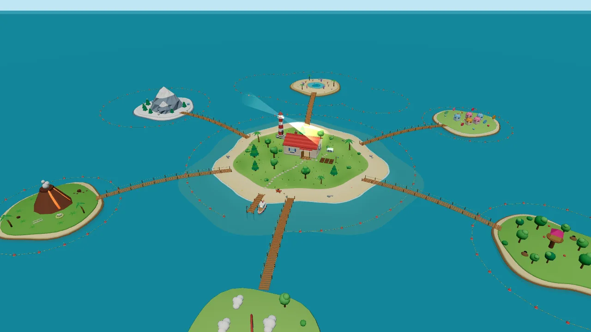
Cena 1. O arquipélago quando ainda tinha cor.
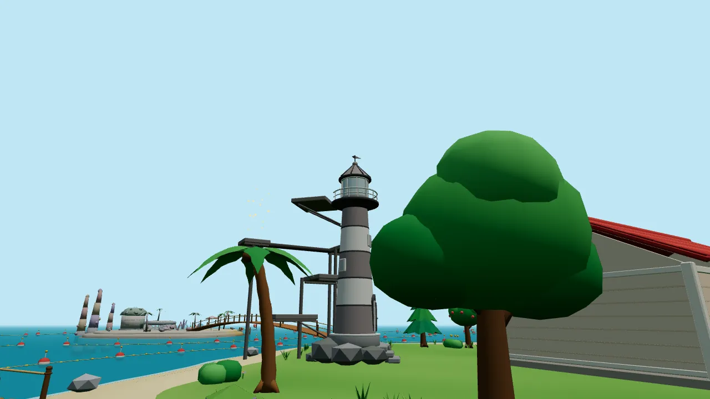
Cena 2. O Farol aceso, ao lado da casa.
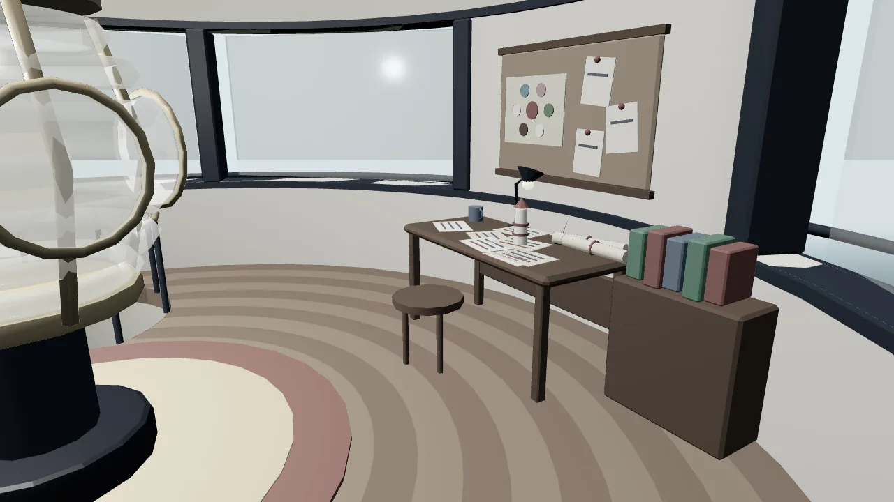
Cena 3. A sala do Farol vazia: a Íris sumiu.
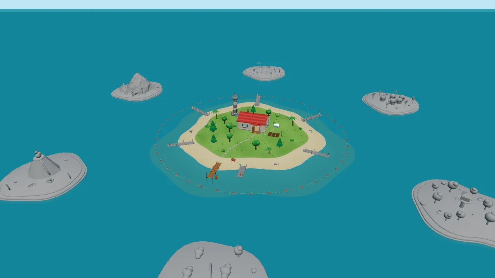
Cena 4. O Cinza tomou conta.
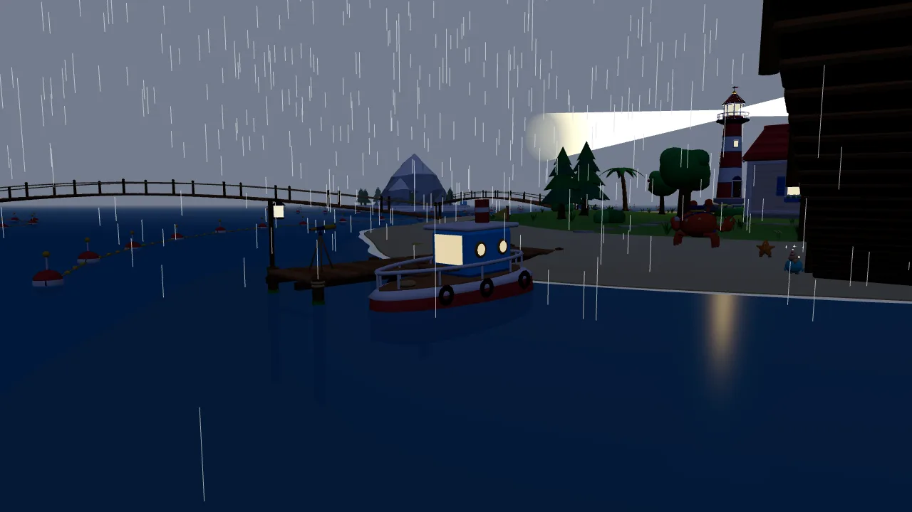
Cena 5. O barquinho chega na tempestade.
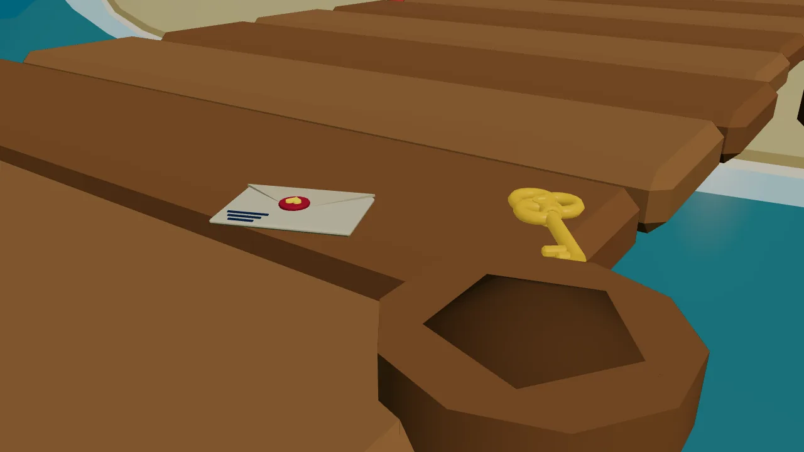
Cena 6. A chave e a carta no píer.
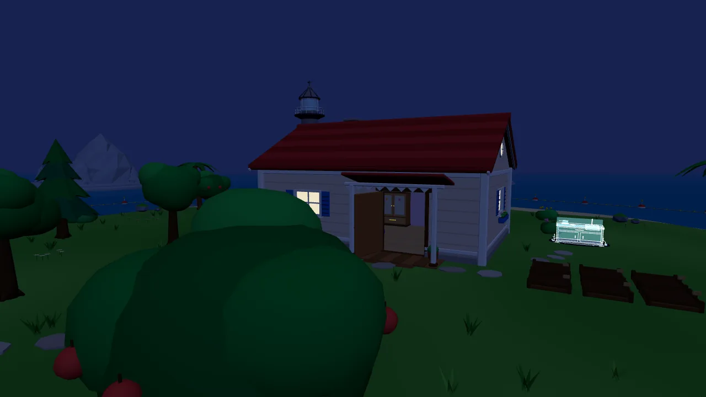
Cena 7. A casinha cinza.
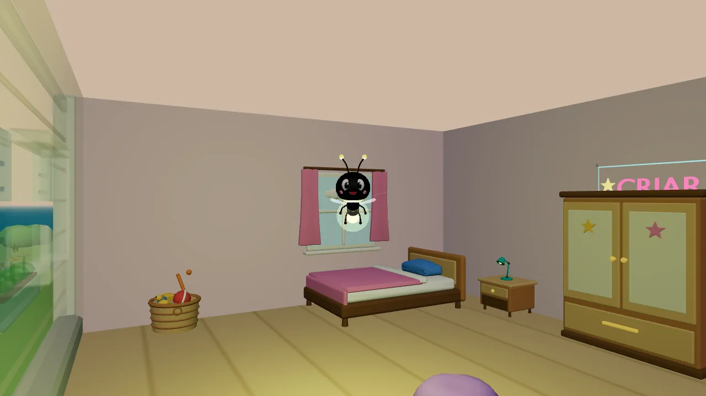
Cena 8. O quarto com cor e o Zappy.
A abertura "O Cinza"
Um livro ilustrado com 8 cenas e 9 falas. Aparece sozinho uma vez por perfil em cada aparelho.
A leitura começa manual, sem prazo: Anterior e Próxima, um toque na tela ou Enter avançam, e as setas voltam e avançam.
Passar sozinho toca tudo em 73 segundos; Pausar leitura para.
Segurar Espaço por 1 segundo pula tudo; Esc fecha. Na última fala, Começar entra no jogo.
Dá para rever no Diário, em "Rever a abertura: O Cinza".
A Íris não aparece na abertura nem na placa da ponte. Ela só aparece no jogo depois do final.
O arquipélago
A sua ilha fica no centro, com o Farol ao lado da casa. Seis ilhas ficam em anel em volta dela.
Cada ilha abre com um posto da Jornada do Criador, os cursos da plataforma. O jogo nunca dá posto: só lê o posto que a criança conquistou nos cursos.
Quando chega um posto novo, a ponte se monta numa cena curta e a ilha nova já chega com 30% de cor.
As ilhas dos postos mais altos são mais altas: Bosque 14,4 m, Vila 15,5, Recife 16,8, Pico 18,2, Vale 19,8 e Nuvens 24 m.
Posto
Ilha
Abre em
Morador
Tema
1
Sua ilha
Faísca
Nico, o caranguejo carteiro, e o Zappy
a casa da Íris, a horta, o píer, a praia
2
Bosque dos Bichos
Construtor(a)
Capi, a capivara
bichos escondidos, casa na árvore, cipós, lago
3
Vila Doce
Inventor(a)
Bento, o tamanduá confeiteiro
padaria, doces, feira, telhados, festas
4
Recife Coral
Explorador(a) de Mundos
Maré, a tartaruga cartógrafa
mar, mapas, navio afundado, corais, mergulho
5
Pico Gelado
Mestre dos Jogos
Floco, o pinguim músico
montanha, neve, iglu, banda, planador
6
Vale dos Dinos
Arquiteto(a) de Mundos
Jade, a coruja dos fósseis
fósseis, ninhos, vulcão, filhote, montaria
7
Ilha das Nuvens
Gênio da Criação
Iriê, a tecelã do arco-íris
nuvens, balão, constelações, jardim do céu
8
O Farol
Lenda
Íris, que volta no final
a subida final e a galeria
Na comunidade adulta, as ilhas abrem pelas etapas da jornada adulta, na mesma ordem (capítulo 16).
Capítulo 2
Como jogar
Teclado e mouse, toque ou controle de videogame. A tecla desenhada nas dicas muda com o último jeito de jogar.
O quê
Teclado e mouse
Toque
Controle
Andar
WASD ou setas
joystick que nasce onde o polegar pousa, na metade esquerda de baixo
analógico esquerdo
Correr
Shift
joystick até o fim
analógico até o fim ou gatilho direito
Pular
Espaço
Pular
botão de baixo
Usar o que está perto
E
Usar
botão da direita
Itens da mochila
1 a 5
tocar no item
Girar a câmera
arrastar com o mouse; C põe nas costas
arrastar; dois toques recentralizam
analógico direito (clique recentraliza)
Aproximar
roda do mouse, + e -
pinça
Modo foto
F
botão da câmera
Menu
Esc
Abrir o menu
Start
Na hora certa, os botões mudam de nome: Pular vira Soltar no cipó, Subir no balão e no mergulho, Fechar no planador. No cipó, Espaço solta; no tronco, W e S sobem e descem; no mergulho, Espaço sobe e Q desce.
A tela do jogo
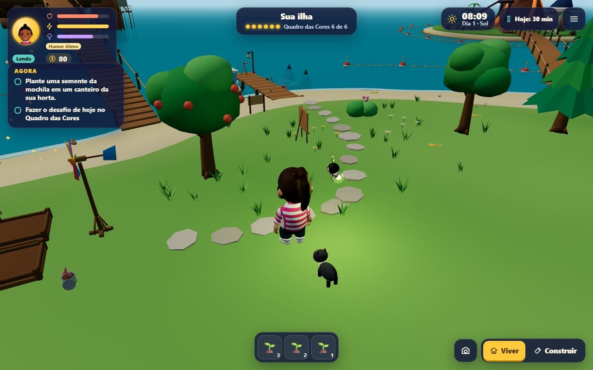
A HUD na sua ilha. Quem joga no alto à esquerda, a ilha e o Quadro das Cores no meio, o relógio e o tempo de hoje à direita, a mochila embaixo.
Quem joga (alto, à esquerda): o retrato do avatar, o posto da Jornada, as três necessidades em barrinhas (Fome, Energia, Diversão) e as moedas.
A ilha agora: o nome da ilha mais perto e "Quadro das Cores n de 6", com seis pontinhos que acendem.
Relógio: "Dia N" e a hora do jogo, com sol ou lua e o clima.
Hoje: N min: os minutos que faltam do tempo livre (só no Kids).
Agora: até 3 lembretes, nesta ordem: abrir a porta nova, comer, descansar, regar, colher e o desafio de hoje. Não dá prêmio nem cria tarefa.
Ação perto: a tecla e o nome, como E Abrir a porta nova.
Mochila: os itens que fazem algo vêm primeiro. Tocar num alimento come. Patins, lanterna e planador viram botões. As lembranças das coleções viram um botão só, "Abrir o álbum de coleções".
Viver / Construir: aparecem depois da porta nova e somem nas corridas. Na corrida e no balão, a HUD mostra só o essencial.
O menu de pausa
Abre com Esc, Start ou Abrir o menu. O jogo para enquanto ele está aberto. Tudo abre dentro do próprio menu, com a lista de lugares sempre à vista.
Início: onde você está, "Continuar jogando" e "Modo foto"; o cartão do Diário da Íris (n de 8 páginas) e o das Coleções; "Criar com as ferramentas" (Pinta, Molda e Estúdio); o clima da sua ilha (depois das Nuvens); os Primeiros passos.
Moradores em casa, Diário, Álbum de coleções, Caderno dos Lumis, Mapa do arquipélago.
Visitar um irmão no Kids (no adulto, "Visitas da comunidade").
Conforto e controles e Voltar para a plataforma.
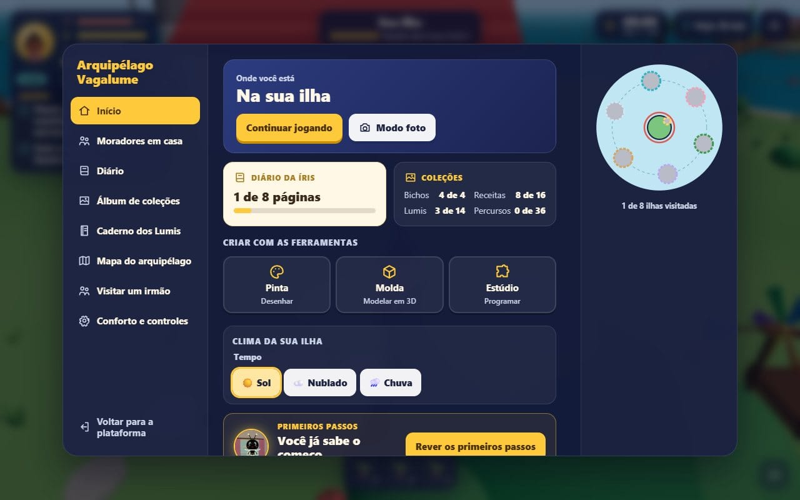
O menu de pausa. Os lugares à esquerda, o Início no meio e o mapa pequeno à direita.
Conforto e controles
Qualidade: Automática (padrão), Leve ou Completa.
Rapidez ao girar: Devagar, Normal ou Rápida. Distância: Perto (6 m), Normal (9 m) ou Longe (13 m).
Inverter para cima e para baixo; a câmera voltar sozinha para as costas (desligada por padrão); Menos movimento; dicas do Zappy na primeira vez.
Com Menos movimento, a câmera não antecipa, bichos e móveis animados param, a chuva não aparece e as cenas cortam em vez de voar. O jogo não tem tremor de câmera.
Primeiros passos com o Zappy
23 falas em 6 capítulos, logo depois da abertura: o oi com o nome da criança; andar, olhar e pular; abrir a porta nova; plantar, regar e ver crescer; as barrinhas, a mochila, o menu e o mapa; colher, a geladeira e a primeira obra.
Só conta o que a criança faz de verdade (andar 2 m, girar a câmera, pular, abrir a porta). Ler e fechar não contam.
O Zappy voa até o lugar certo; um facho dourado e um anel marcam o alvo. O prêmio é a geladeira, não moedas.
As dicas de primeira vez (cartão verde-água "Primeira vez") explicam o Quadro das Cores, o barco, a lanterna, o primeiro borrão, o primeiro Lumi e a primeira noite. Nunca pedem tarefa.
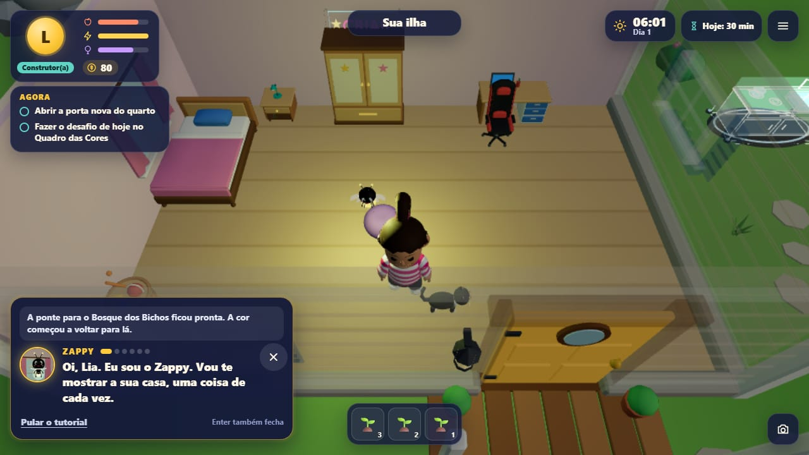
Primeiros passos. O Zappy chama a criança pelo nome e o cartão diz o que fazer agora.
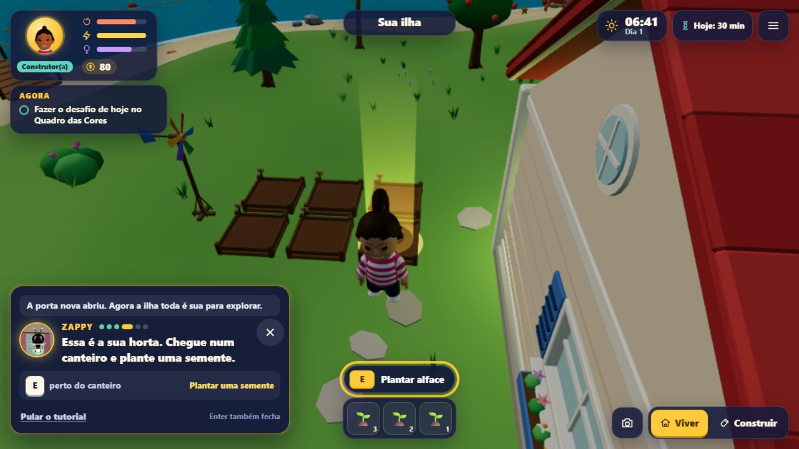
Plantar na horta. O facho dourado e o anel marcam o canteiro.
Capítulo 3
Viver: dia, necessidades e tempo
As necessidades são humor bom e visível. Cuidar dá bônus; descuidar nunca castiga.
Dia e noite
Um dia do jogo dura 16 minutos de verdade: 12 de dia (6h às 18h) e 4 de noite.
A noite é azul de lua: dá para ver o mar e as casas. É à noite que saem os borrões do Cinza (capítulo 8).
A horta e os pedidos dos moradores seguem o relógio de verdade, não o dia do jogo.
Necessidades e humor
Fome, Energia e Diversão vão de 0 a 100. Um jogo novo começa com 80, 100 e 70.
Caem só com o jogo ativo: fome 2 por minuto, energia 1,2 (o dobro correndo), diversão 1.
Humor ótimo, com as três acima de 60: 10% a mais de velocidade, um alimento a mais na colheita e uma moeda a mais nos pedidos. Cansado: fome ou energia abaixo de 15. Bem: o resto.
Cochilo: com a energia em 0, o jogo espera a ação acabar e a criança cochila onde está. Você acordou em casa, descansada. Nada se perdeu.
Comer e descansar
Comer: tocar no alimento da mochila. Alface dá fome +8; tomate e milho +10; a salada da horta +40 e energia +5; a pipoca fome +15 e diversão +25.
O alimento tirado da geladeira com aparência vem fresquinho e sacia 25% a mais.
Banco ("Sentar no banco"), na praça da Vila e no iglu do Pico: a energia enche em uns 3 minutos.
Cama ("Deitar na cama"), se o quarto da plataforma tem cama: enche em 1 minuto e abre o resumo do dia "Hoje na sua ilha" (Lumis presos, estrelas, pedidos, corações, pontes, ilhas, chaves, segredos e constelações).
Clima
Antes das Nuvens, um clima por dia do jogo: 55% sol, 25% nublado e 20% chuva.
Com as Nuvens, a Iriê ensina a escolher: o menu ganha "Clima da sua ilha" e o cata-vento "Mudar o clima".
A chuva rega a horta sozinha. O clima vale perto da sua ilha.
O tempo livre do Kids
Padrão de 30 minutos por dia. Os pais escolhem de 10 a 240 minutos, de 5 em 5. O dia vira à meia-noite de São Paulo.
O tempo só conta com a aba visível, sem menu, sem ferramenta aberta (Pinta, Molda, Estúdio) e sem pausa.
No fim, se uma ação está em andamento (corrida, balão, montaria, mergulho, barco, cipó, conversa), o jogo espera ela acabar, por até 30 segundos. O tempo de hoje acabou. Termine o que está fazendo e eu ponho você para dormir.
Depois vem a tela Hora de descansar, com o resumo do dia. O adulto não tem limite.
Capítulo 4 · Posto 1, Faísca
A sua ilha
A casa da Íris, a horta, o píer e a praia. Começa quase toda cinza; só o quarto tem cor.
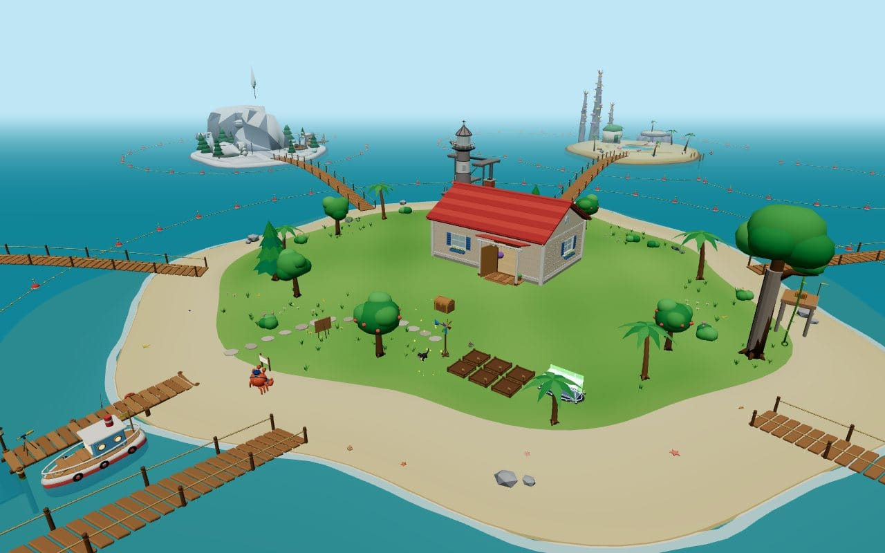
A sua ilha com as seis cores de volta: a casa, a horta, o píer, a praia, o gramado e a trilha das pedras. O Farol fica ao lado da casa.
O começo
A criança aparece no quarto, que é o mesmo Meu quarto da plataforma: móveis, tema, bichinho e troféus.
Só o seu quarto ainda tem cor. Vamos abrir a porta nova e acender o resto? "Abrir a porta nova" abre a casa.
O quarto vale nos dois sentidos: ao entrar em casa o jogo relê o quarto, e no Construir "Meu quarto" abre o editor da plataforma por cima do jogo.
O bichinho do quarto (gato, cachorro ou passarinho) pode sair e acompanhar a criança.
A cor que volta
Cada parte ganha cor por uma ação ou pelo quadro dela no Quadro das Cores, o que vier primeiro.
Parte
Pela ação
Pelo quadro
Casa
abrir a porta nova
1
Horta
a primeira colheita
2
Píer
o primeiro peixe
3
Praia
só pelo quadro
4
Gramado
só pelo quadro
5
Trilha das pedras
só pelo quadro
6
A horta
6 canteiros na frente da casa. O quintal pode ganhar mais 18 (24 ao todo).
Sementes iniciais: 3 de alface, 2 de tomate e 1 de milho.
Plantar, regar, esperar, colher. A planta só cresce depois de regada.
Crescer leva horas de verdade, contadas da rega, inclusive com o jogo fechado: alface 4 h, tomate 8 h, milho 16 h. No primeiro pedido, antes da geladeira, é rápido: 3, 5 e 8 minutos.
Colheita: alface 2, tomate 3, milho 2, mais 1 semente de volta. A horta nunca acaba.
A primeira colheita manual dá o projeto azul da geladeira.
A geladeira, a bancada e o forno
A geladeira guarda 4 alimentos em holograma e 12 com aparência, que conserva (sacia 25% a mais).
A bancada fica ao lado da horta: com uma receita possível, "Cozinhar…"; com mais, "Ver as receitas".
O forno é um projeto azul que chega com o primeiro coração do Bento.
Cozinhar nunca gasta ingredientes se o prato não couber na mochila.
Os ingredientes que não vêm da horta chegam nas cestas dos moradores, nos turnos da Vila e na feira.
Receita
Ingredientes
Onde
Quem ensina
Ao comer
Salada da horta
1 alface, 1 tomate
bancada
já sabe
fome +40, energia +5
Pipoca (faz 2)
1 milho
bancada
já sabe
fome +15, diversão +25
Bolo de fubá
fubá, leite, ovo
forno
Bento, 1 coração
fome +50
Pão de queijo (faz 3)
polvilho, queijo
forno
Bento, 2 corações
fome +30
Brigadeiro (faz 4)
cacau, 2 leites
bancada
Bento, 3 corações, ou o extra do quadro 6 da Vila
fome +10, diversão +20
Chocolate quente
cacau, leite
bancada e fogareiro do iglu
Bento, 4 corações
fome +15, energia +15 (+20 no Pico)
Peixe com coco
peixe, coco, limão
bancada
Maré, 1 coração
fome +70, energia +10
Açaí na tigela
polpa de açaí
bancada
Jade, 1 coração
fome +25, energia +15
Mingau de milho
fubá, leite
bancada
Floco, 1 coração
fome +35, energia +10
Canjica
2 milhos, leite
bancada
Iriê, 1 coração
fome +35, diversão +10
Salada colorida
2 alfaces, 2 tomates, 1 milho
bancada
achar os 4 bichos do Bosque
fome +55, energia +15
Receitas de festa
Salada do Carnaval, Pipoca de festa e Milho da fogueira (Junina), Cocada (Noite das Lanternas) e Manjar de coco (fim de ano). Ver o capítulo 14.
O píer, a praia e a luneta
Pesca: perto da vara, "Lançar a linha". Depois de 3 s, "Recolher a linha" fica 5 s. Se o peixe escapa, é só tentar de novo. Os peixes vêm em ordem: sardinha, robalo, garoupa, linguado e peixe-voador; entram no álbum e voltam ao mar.
Iscas: a minhoca (latinha no canto da horta) faz o peixe chegar em 1 s; a isca de penas (no tampo do píer) dá 10 s para recolher. Na feira, 2 moedas cada. A isca só é gasta quando o peixe vem.
Coleções da praia: cinco conchas (caracol, vieira, tigre, mexilhão e listrada) e a estrela-do-mar, que é só observada.
Luneta, na ponta do píer: mostra a próxima ilha fechada e diz o posto que abre a ponte. Lá, o morador acena, um bicho da ilha corre e o Lumi de luz da família brilha. Com o anel todo aberto, mostra o Farol.
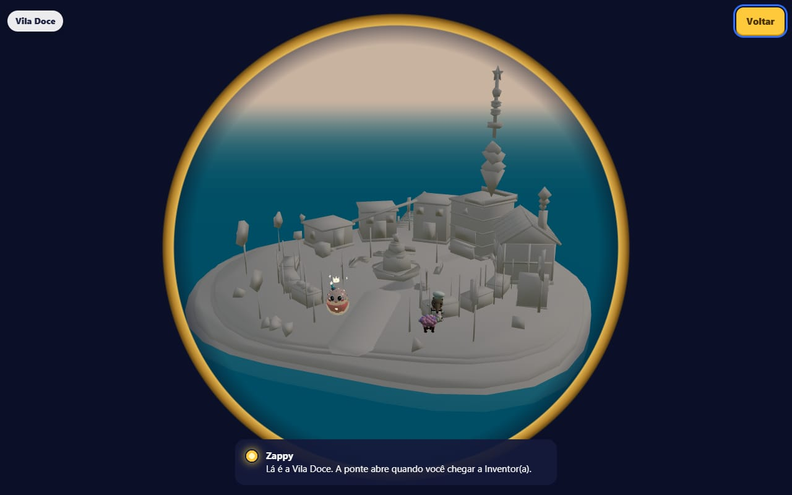
Pela luneta. A Vila Doce ainda cinza: o Bento acena, a ovelhinha de algodão-doce corre e o Brigadeiro de Luz brilha. Lá é a Vila Doce. A ponte abre quando você chegar a Inventor(a).
O Nico e o barco
O Nico, caranguejo carteiro, fica na areia. Na primeira conversa do dia, ele conta de quem há pedido esperando nas ilhas já visitadas.
Tem amizade, presentes, pedido do dia e aniversário (25 de janeiro). Gosta de alface e salada. Com 3 corações, dá o Chapéu 2. O pedido no Estúdio dele é "A placa da noite".
Os Lumis da praia, Estrelinha e Búzio, só aparecem depois de presos com a lanterna.
O barco funciona depois que o Recife abre. No cais, "Embarcar" mostra os destinos abertos; a viagem é guiada e para sozinha no cais. Liga a sua ilha ao Recife e cada ilha do anel às duas vizinhas.
O Quadro das Cores da sua ilha
Um cavalete na grama, ao lado da trilha de pedras entre a porta e o píer. Seis quadros do Pega-conchas, em blocos:
1Passos na areia
2A primeira concha
3O balde do Nico
4A concha rosa
5A maré volta
6Pega-conchas
Desafios do dia: "o aviso do Nico", "só a rosa" e "esvaziar o balde". Desafio 3D: "A concha do Nico".
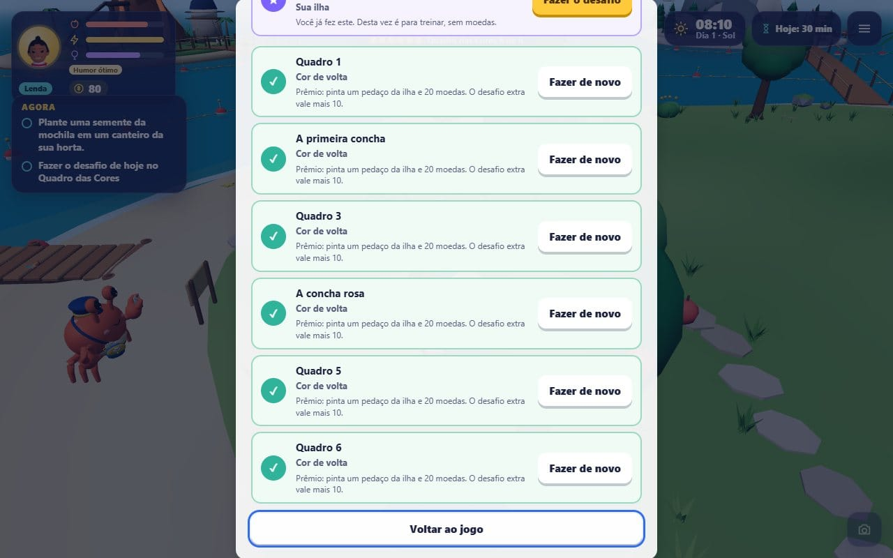
O painel do Quadro das Cores da sua ilha, com o desafio de hoje em cima e os seis quadros. Desafio feito. A cor voltou para a praia da sua ilha.
Outros lugares
As 4 chaves dos cômodos, escondidas no gramado (capítulo 5).
Três segredos: o vento atrás da horta (planador), o deque alto do cipó (depois de balançar no Bosque) e a gruta debaixo do píer (depois de mergulhar no Recife).
O cata-vento, que muda o clima depois das Nuvens, e as boias vermelhas e brancas: fora delas, uma correnteza mansa traz de volta, sem castigo.
A ponte nova: quando chega um posto, o Zappy voa até a ilha cinza, a ponte se monta tábua por tábua com a cor escorrendo e a câmera faz a travessia. A placa da ponte fechada diz: Tem mais para descobrir. A ponte abre em [posto].
Capítulo 5
Construir a casa
A casa cresce em grade: paredes, portas, janelas, pisos, objetos com função e móveis. Tudo pode ser desfeito.
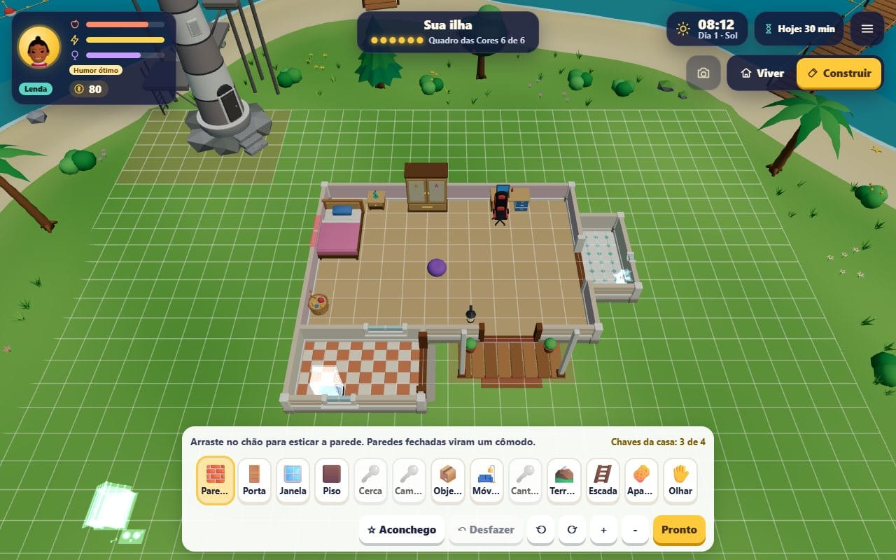
O modo Construir. As paredes ficam cortadas, a grade do lote aparece no chão e a barra de ferramentas fica embaixo.
Viver / Construir aparecem depois da porta nova. "Pronto", "Viver" ou Esc voltam.
Parede: arrastar estica; paredes fechadas viram cômodo. Porta: tocar numa parede. A casa sempre tem uma porta de entrada, que pode mudar de lugar com a varanda.
Janela grande, em arco ou redonda. Piso de tábua, ladrilho ou azulejo.
Cerca, Caminho e Canteiro no quintal. Objetos (os projetos azuis) e Móveis.
Terreno (depois das Nuvens) e Escada (depois do Pico). Apagar, Olhar e Meu quarto.
A prévia fica verde quando dá e vermelha quando não dá, com o motivo na linha de baixo. "Desfazer" volta até 30 mudanças.
Cômodo retangular ganha telhado de duas águas; as portas abrem sozinhas; as janelas acendem à noite.
As chaves dos cômodos
Sem chave, a casa já cresce, mas fecha só o quarto. Cada chave da cozinha, da sala e do banheiro deixa fechar mais um cômodo. A do quintal libera cerca, caminho e canteiro.
Ficam escondidas no gramado: a da cozinha a leste da horta, a da sala ao sul, a do banheiro a noroeste da casa e a do quintal ao norte.
Para fechar mais um cômodo, precisa da chave da cozinha. Ela está escondida em algum canto da sua ilha.
Objetos com função
Chegam como holograma azul que já funciona. Com uma aparência, ficam completos.
Objeto
De onde vem
Geladeira
primeira colheita
Forno
1 coração com o Bento
Casinha de bicho
adotar um bicho no Bosque
Aquário
primeiro coral replantado no Recife
Lareira
primeiro chocolate quente no iglu do Pico
Instrumentos da banda
festival de inverno do Pico
Fliperama
primeiro minijogo aprovado no Estúdio
Museu dos fósseis
fóssil descoberto no Vale
Planta de interior
primeira obra
Pinta, Molda e a galeria
Pintar no Pinta abre no posto Construtor(a): a planificação da caixa do objeto, com a frente marcada.
Modelar no Molda abre no posto Explorador(a): a caixa do molde, que confere se cabe, se a frente está na marca e o teto de 5.000 triângulos.
Usar uma criação minha: as criações da conta que cabem no molde.
Galeria: três estilos por objeto (clássica, retrô e moderna), comprados com moedas, de 30 (planta) a 70 (aquário, banda, fliperama e museu). A compra pede confirmação e nunca é cobrada duas vezes.
Trocar entre as aparências que ela já tem não cobra. Aquário, fliperama e planta comprados valem também no quarto da plataforma.
Móveis e aconchego
Móveis livres nas abas Cozinha, Sala e Banheiro, até 24 na casa. Café e feira abre com a Vila; Festa só aparece durante uma festa.
A ferramenta Olhar mostra o aconchego de cada cômodo: variedade, luz, plantas, capricho e feito por você. Comprar nunca tira ponto.
Níveis: Começando, Gostoso (6), Aconchegante (12) e Muito aconchegante (22).
Moradores em casa: com 12 pontos, um morador vem visitar; com 22, dá para fazer festa com até três.
A casa cresce com os postos
Quintal (chave do quintal): cerca, caminho, até 18 canteiros e a casinha do bicho.
Andar de cima (Pico, Mestre dos Jogos): a escada põe o piso de cima sobre a casa toda; lá valem parede, porta, janela, piso, móveis e objetos.
Quintal grande (Vale, Arquiteto): o lote cresce.
Terreno (Nuvens, Gênio): sobe e desce o chão do quintal em meio metro, até 1,5 m.
Cabana no Bosque: um lote de 6 × 8 na ponta de campo do Bosque, com as ferramentas de sempre.
Tema da semana: o diário sugere uma ideia nova a cada segunda-feira ("Uma casa com luz", "Um caminho para a horta"…), sem prazo nem prêmio.
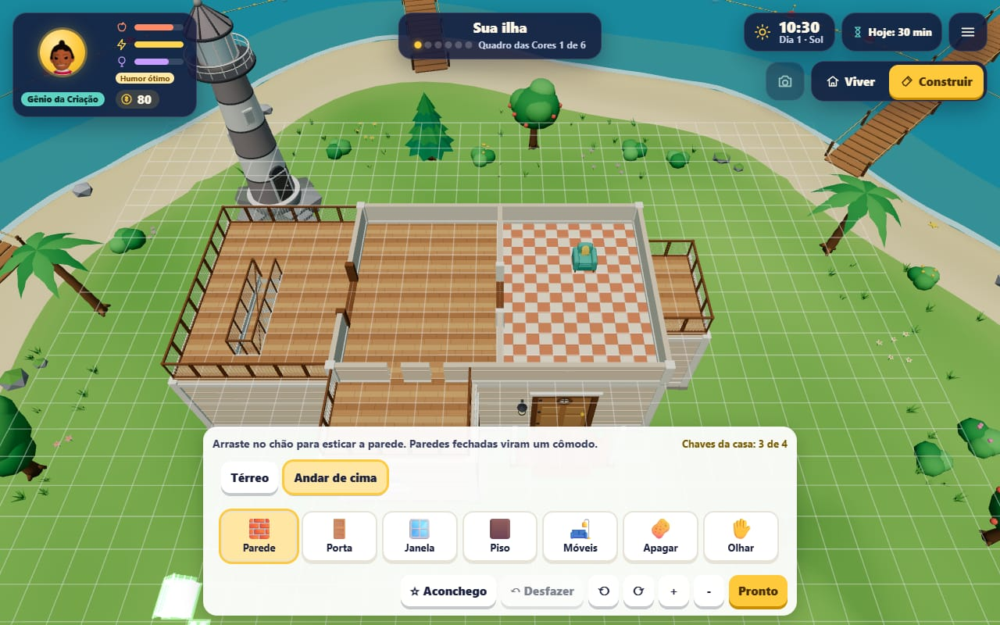
O andar de cima no Construir, com os botões Térreo e Andar de cima.
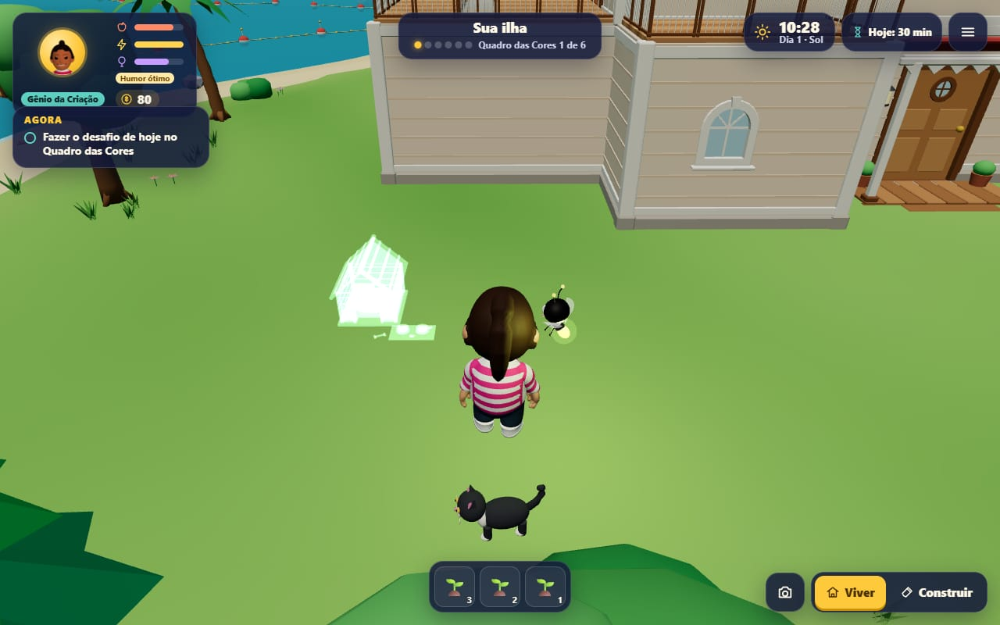
A casa com o andar de cima, vista de fora.
Capítulo 6
As ilhas do anel
Seis ilhas, uma por posto, cada uma com um morador, brinquedos próprios, um percurso, uma família de Lumis, um segredo e seis quadros que trazem a cor de volta.
Ao abrir a ponte, a ilha fica com 30% de cor. Cada quadro feito pinta inteiro um dos seis pedaços da ilha, como fatias; o pedaço 1 fica do lado da ponte.
O Quadro das Cores fica num cavalete perto da chegada. Feito o quadro, Mais uma cor voltou para o… e a tinta escorre pelo pedaço.
À noite, dois borrões do Cinza saem em cada ilha aberta (capítulo 8).
Cada ilha tem um desafio 3D (pegar um item e levar ao morador) e desafios do dia.
Os moradores
Amizade de 5 corações, de 100 pontos cada: +10 pela primeira conversa do dia, +30 pelo pedido entregue, +20 por presente preferido e +8 por presente comum (só o primeiro do dia conta). No aniversário, o presente vale o dobro. A amizade nunca desce.
Com 1 coração, ensinam a receita; com 2, entregam a página do diário; com 3, dão uma roupa para o avatar.
O pedido do dia pede itens da horta e paga 3 moedas (4 com humor ótimo), +30 de amizade e uma cesta de ingredientes.
Cada morador tem um pedido no Estúdio (5 moedas e 2 no extra); feito, a placa ao lado dele acende à noite.
Posto 2 · Construtor(a)
Bosque dos Bichos
Bichos escondidos, a casa na árvore, os cipós sobre o lago e a Capi cuidando de tudo.
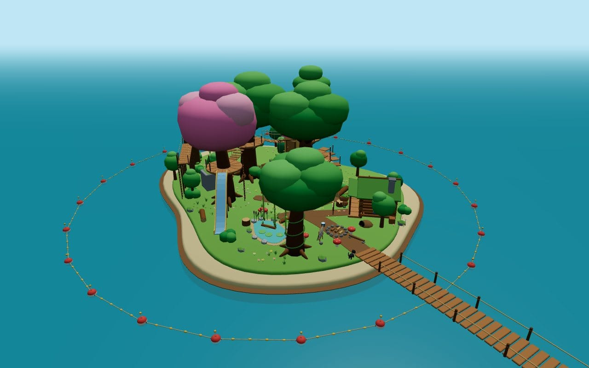
O Bosque com as seis cores: a casa na árvore, o ipê rosa, a cabana, o lago e a ponte que chega da sua ilha.
Ficha do Bosque posto 2 de 8
Morador
Capi, a capivara. Gosta de milho e salada; aniversário em 12 de março.
Brinquedos
cipós, escalada, equilíbrio, casa na árvore, escorregador, mecanismos, lago
Percurso
Percurso nas copas: 5 vagalumes, estrela do tempo em 24 s
Lumis
Pitanga (comum), Ipê (raro), Ipê de Luz (baú do vento)
Segredos
o baú no alto do vento (planador) e o vão da pista (patins)
Quadro 6
blocos · Corrida dos bichos
Desafio 3D
O coelhinho da Capi
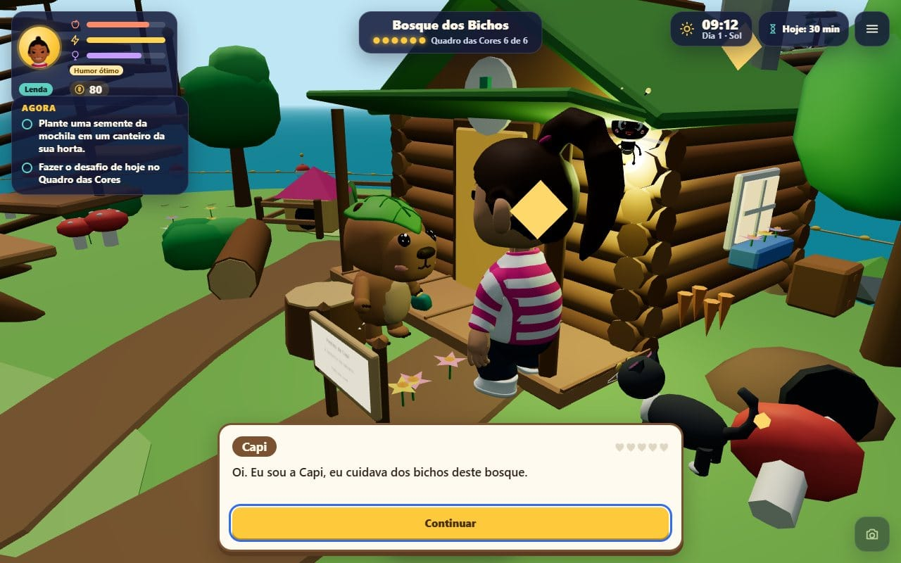
A Capi na frente da cabana. Oi. Eu sou a Capi, eu cuidava dos bichos deste bosque.
A Capi e os bichos
Pedidos: alfaces, tomates, milho, salada, pipocas ou "achar mais um bicho". Com 2 corações, a página: Hoje desenhei uma ponte e apaguei três vezes. Com 3, o Colar de coração.
Esconde-esconde: o cachorro atrás da moita do norte, o gato entre os cogumelos do lago, o coelho na toca do oeste e o porquinho atrás da cabana. Pegadas levam a cada um, e o Zappy diz "morno", "quentinho" e "pertinho". Achar os quatro dá uma salada e ensina a Salada colorida.
Adotar até três bichos, com nome. Um vai junto; os outros esperam no cercadinho. Cuidar é barriga, limpeza e carinho; ele nunca morre nem foge. Em 7 dias bem cuidado, cresce; com uma aula por dia, aprende um truque na 5ª.
Os movimentos do Bosque
Cipós: três sobre o lago ("Pegar o cipó"). Pedir para o lado do balanço bombeia; Espaço solta. Do primeiro se pega o segundo, do segundo o terceiro. Cair no lago não é castigo.
Escalada: o tronco da árvore dos cipós ("Escalar o tronco"); lá de cima, o pulo cai no primeiro cipó.
Equilíbrio no tronco caído ao lado do lago, sem queda por erro pequeno.
Casa na árvore: escada, quatro deques, pontes que cedem e balançam, escorregador e uma pedra de agarrar a borda.
Mecanismos: uma porta com dobradiça e um caixote que, empurrado até a placa, abre um alçapão. No lago, um tronco que boia e pode ser empurrado; uma fogueira com balde; um galho seco que quebra ao pisar.
Percurso nas copas (placa ao pé da escada): sobe pelas copas e pelos 4 deques até o escorregador.
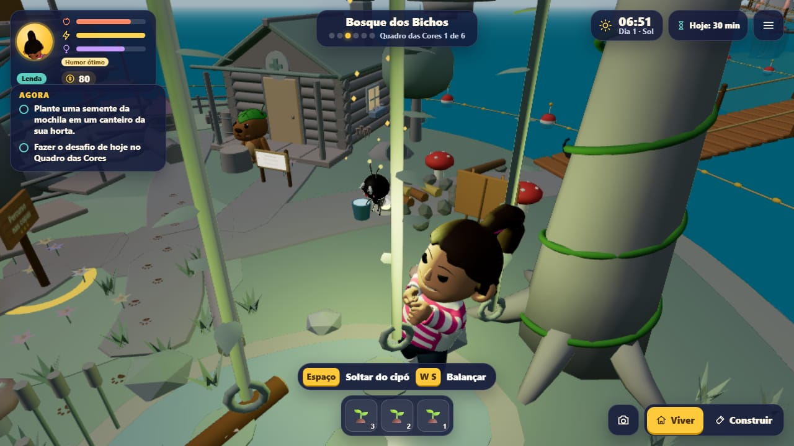
No cipó. Pedir para o lado do balanço bombeia; Espaço solta.
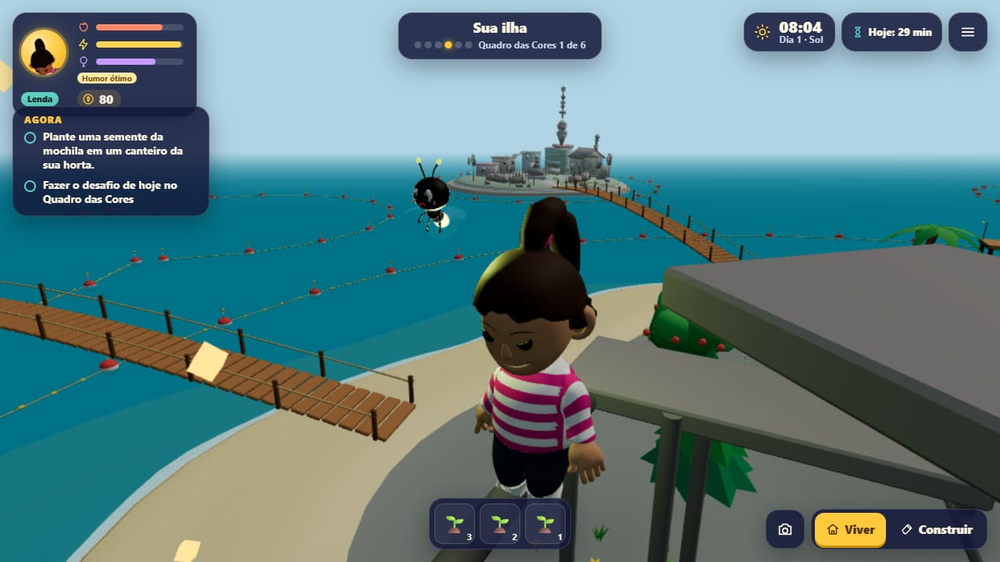
Equilíbrio no tronco caído ao lado do lago.
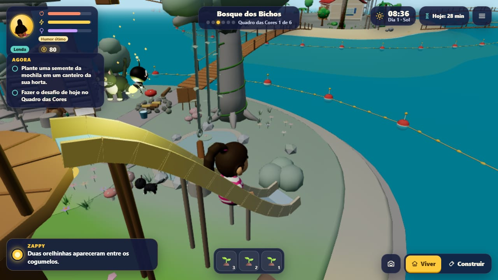
O escorregador da casa na árvore, o fim do percurso nas copas.
Quadro das Cores: Chuva de pinhas
1Pinhas caindo
2Bolotas para o alto
3Quebrar as pinhas
4Três vidas
5Fim e outra partida
6Corrida dos bichos
Desafios do dia: "Corrida dos bichos: pedras" e "Corrida dos bichos: placar". Pedido no Estúdio da Capi: "A lanterna da cabana".
Posto 3 · Inventor(a)
Vila Doce
A padaria do Bento, a sorveteria com a torre de doces, a feira da semana e os telhados por onde corre o entregador.
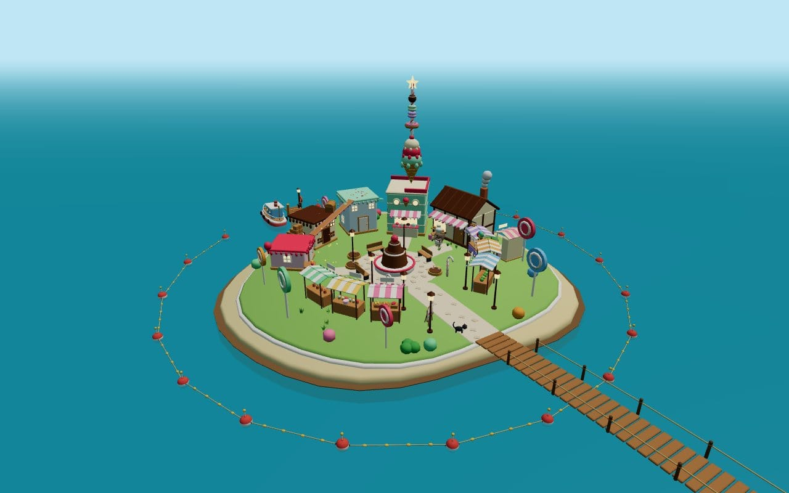
A Vila Doce: a fonte de chocolate na praça, a padaria, a sorveteria com o espeto de doces no alto, as casinhas de telhado plano e a feira.
Ficha da Vila Doce posto 3 de 8
Morador
Bento, o tamanduá confeiteiro. Gosta de milho e pipoca; aniversário em 24 de junho.
Brinquedos
turnos nos balcões, entrega pelos telhados, patins, lanterna
Percurso
Entrega pelos telhados: 4 confeitos, estrela do tempo em 15 s
Lumis
Quindim (comum), Brigadeiro (raro), Brigadeiro de Luz (baú do vento)
Quadro 6
blocos · A corrida do entregador, pelos telhados
Desafio 3D
O bolo do Bento
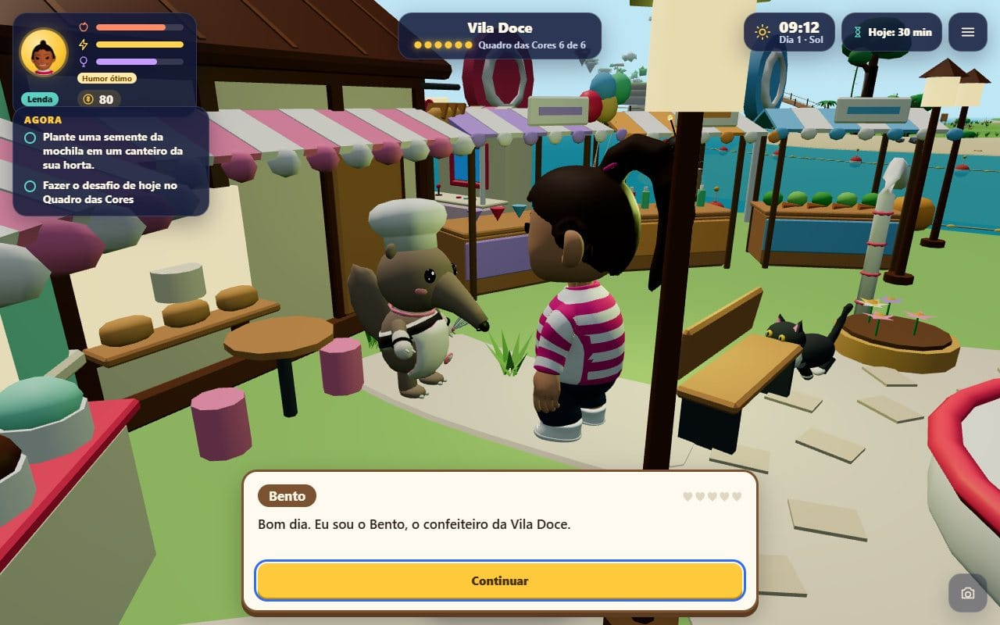
O Bento na frente da padaria. Ele esqueceu as receitas quando a cor foi embora.
O Bento e as receitas
A cada coração, o Bento lembra uma receita: bolo de fubá (1), pão de queijo (2), brigadeiro (3) e chocolate quente (4). Com 1 coração chega o forno.
Com 2 corações, a página: O Bento me pediu a receita do bolo de fubá. Eu disse que ainda não estava boa. Estava boa. Com 3, a Manga longa.
Na segunda noite, entrega a lanterna (e repõe se ela sumir). Pedido no Estúdio: "O letreiro da confeitaria".
Turnos nos balcões
Três balcões: a padaria ("Ajudar no balcão", na conversa com o Bento), a sorveteria e a barraca de sucos.
Cada turno tem seis fregueses, que pedem 1, 1, 2, 2, 3 e 3 coisas. Sem engano, 3 estrelas.
O primeiro turno do dia em cada balcão paga 5 moedas e ingredientes. Nunca gasta nada.
Entrega pelos telhados e patins
Na praça, "Começar a entrega pelos telhados": caixotes, três casinhas e o terraço da sorveteria. Dois atalhos, a prancha e a escada de caixotes ("Olhar o atalho").
A primeira chegada dá um par de patins: andar e correr ficam 1,3 vez mais rápidos e o corpo desliza ao soltar.
A feira e a barraca do jogo
Feira da semana: três aparências da galeria em destaque, a banca onde se vendem pratos (uma venda por dia, até 5 pratos), os insumos (sementes e ingredientes) e, nas festas, o vestuário.
Barraca do jogo ("Jogar na barraca"): mostra a capa do minijogo mais recente da Vila e abre os minijogos aprovados da ilha.
Os bancos da praça servem para descansar. As festas da estação enfeitam a Vila (capítulo 14).
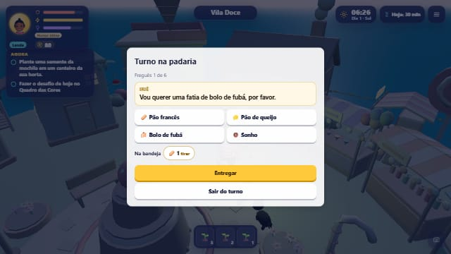
Turno na padaria. O freguês pede; a criança põe na bandeja e entrega.
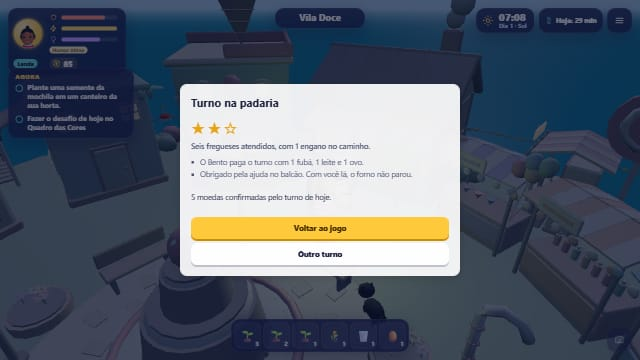
Fim do turno, com as estrelas e o que ele rendeu.
Quadro das Cores: a corrida do entregador
1O entregador pula
2Pedras na rua
3Começar e recomeçar
4A batida
5Cada pedra num lugar
6A corrida do entregador
Os quadros 1 a 5 seguem as aulas do curso Corre, Dino!, na rua. O quadro 6 é pelos telhados: cada chaminé nova vem mais rápida, encostar numa chaminé encerra a corrida e mostra os metros, e o extra é o bolo dourado que vale o dobro (o extra também ensina o brigadeiro). Desafios do dia: "Pedras maiores", "Pombos na praça" e "Quem não vê a tela".
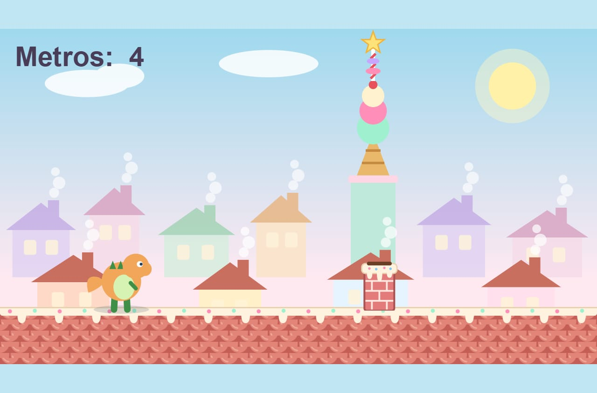
O quadro 6 no Estúdio. O entregador corre pelos telhados da Vila, com a torre de doces ao fundo, e pula as chaminés de glacê.
Posto 4 · Explorador(a) de Mundos
Recife Coral
O mar, os mapas da Maré, o navio afundado, o labirinto de corais e o mergulho sem pressa.
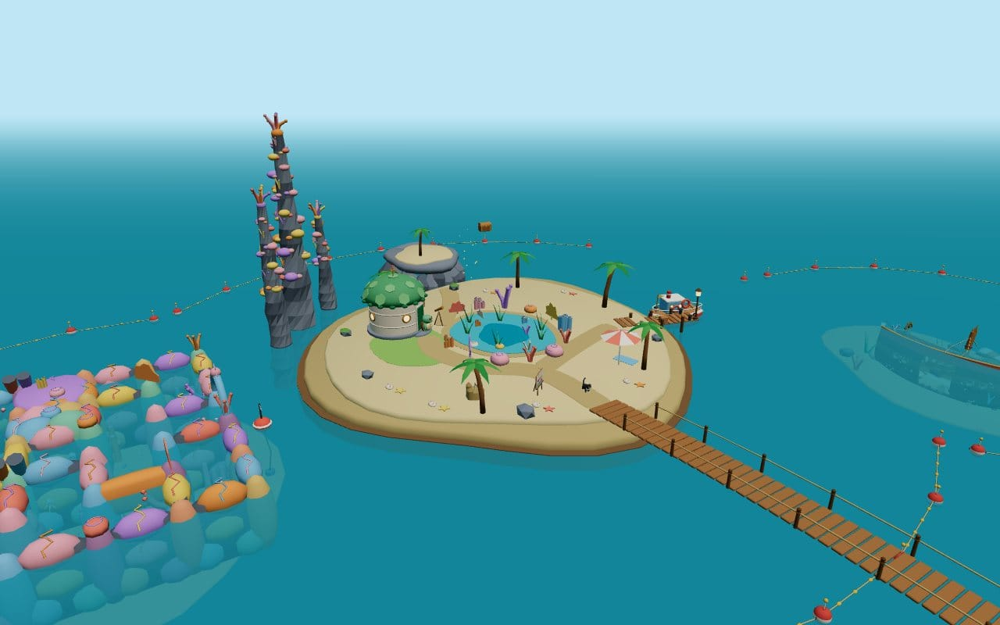
O Recife: a casa-casco da Maré, a lagoa com os corais, o cais e os pináculos de coral no mar.
Ficha do Recife posto 4 de 8
Moradora
Maré, a tartaruga cartógrafa. Gosta de salada e alface; aniversário em 8 de junho.
Brinquedos
mergulho, navio afundado, labirinto, corais para replantar, mesa de mapas
Percurso
Pulos nos corais: 5 pérolas, estrela do tempo em 22 s
Lumis
Bolha (comum), Pérola (rara), Pérola de Luz (baú do vento)
Quadro 6
Python · Mira de bolhas: mudas da lagoa (vira a atração "Bolhas da lagoa")
Desafio 3D
A estrela da Maré
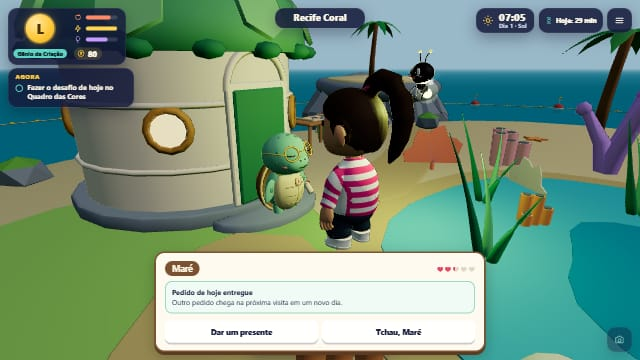
A Maré na porta da casa-casco: os corações da amizade, o pedido do dia já entregue e "Dar um presente". Na apresentação, ela diz: Sou Maré. Faço mapas do mar.
Com 1 coração, a Maré ensina o Peixe com coco; a cesta dela traz peixe, coco e limão. Com 3, os Óculos redondos. Pedido no Estúdio: "A boia de luz".
Mergulho: na marca, "Mergulhar". A direção segue a câmera; Espaço sobe e Q desce. Sem fôlego, dano ou pressa.
Navio afundado: o baú e a página do Recife, no cesto sob a vela caída: Mapas sem fim não levam ninguém a lugar nenhum.
Labirinto de corais: as pérolas no fim. O baú e as pérolas dão +15 de diversão.
Corais: quatro desbotados na beira da lagoa ("Replantar o coral…"). O primeiro traz o aquário, que ganha um peixe por coral.
Mesa de mapas: abre o mapa do arquipélago no menu.
Depois do Recife, o barco começa a funcionar e a gruta debaixo do píer da sua ilha abre para o mergulho.
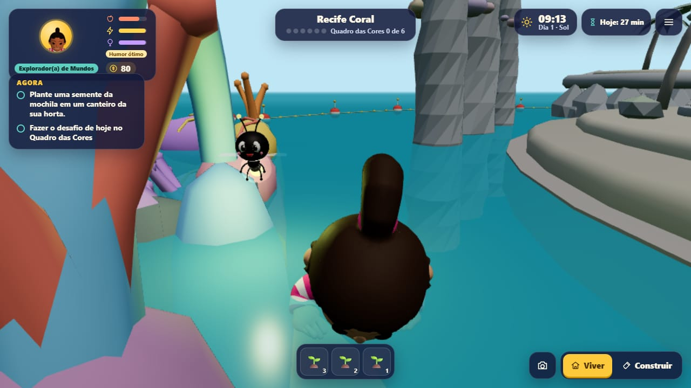
Mergulho. Espaço sobe e Q desce; não há fôlego nem pressa.
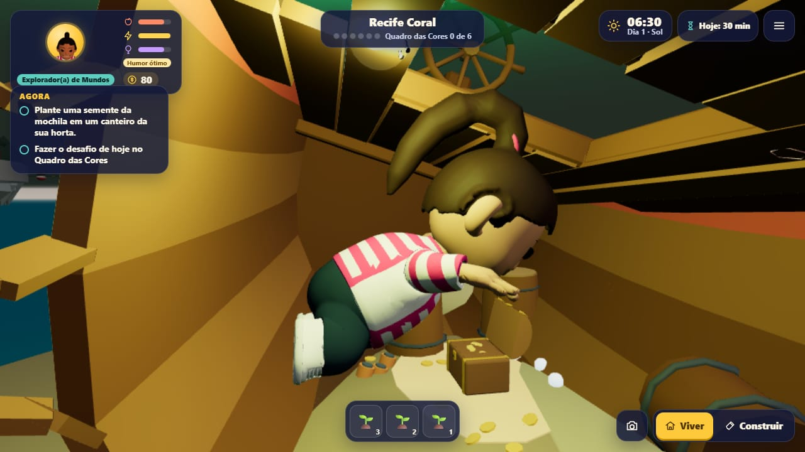
O navio afundado, com o baú.
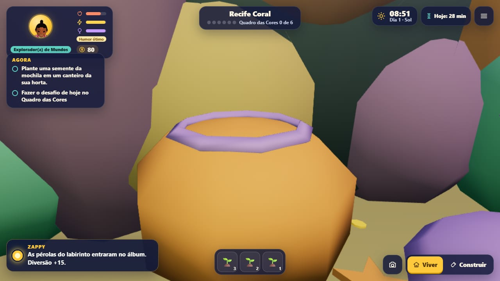
O labirinto de corais e as pérolas no fim.
Quadro das Cores: a Mira do Recife
1Uma bolha por vez
2Alvo preso conta ponto
3O alvo muda de lugar
4Tempo de partida
5Nova partida
6Mudas da lagoa · Python
Desafios do dia: "Mira de bolhas" e as variações "bolha rápida", "dois pontos" e "outro alvo".
Posto 5 · Mestre dos Jogos
Pico Gelado
A montanha com a trilha até o cume, o trenó, o iglu, a banda dos pinguins e o planador que leva a qualquer altura.
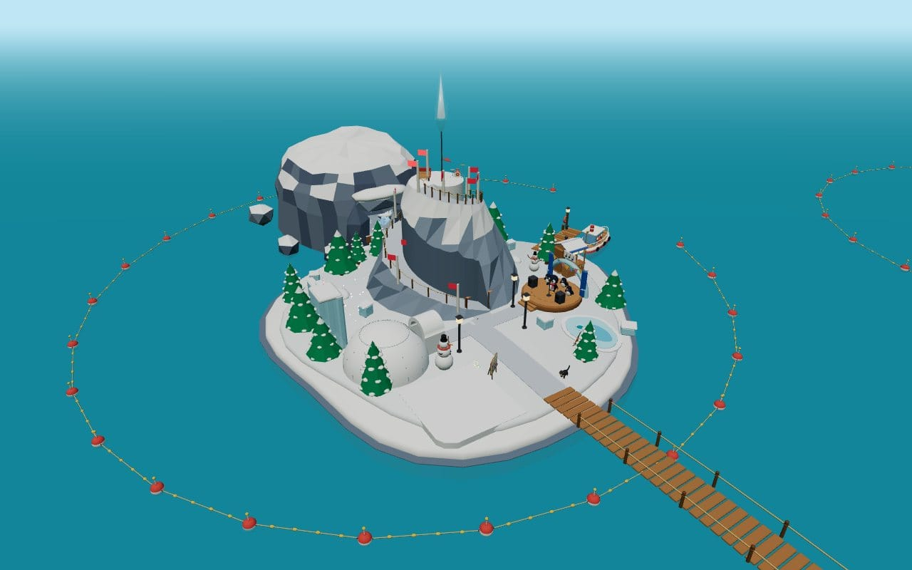
O Pico Gelado: a montanha com a trilha em espiral, a ponta de gelo no alto, o iglu, o palco e o lago congelado.
Ficha do Pico posto 5 de 8
Morador
Floco, o pinguim músico. Gosta de pipoca e chocolate quente; aniversário em 21 de junho.
Brinquedos
subida ao cume, trenó, planador e o vento, iglu, banda, caverna de cristal
Percursos
Subida ao cume (5 flocos, 18 s) e Descida de trenó (5 bandeirinhas, 10 s)
Lumis
Gelinho (comum), Cristal (raro), Cristal de Luz (na gruta da sua ilha)
Quadro 6
Python · A subida do Floco: flocos no gelo (vira atração)
Desafio 3D
O cristal do Floco
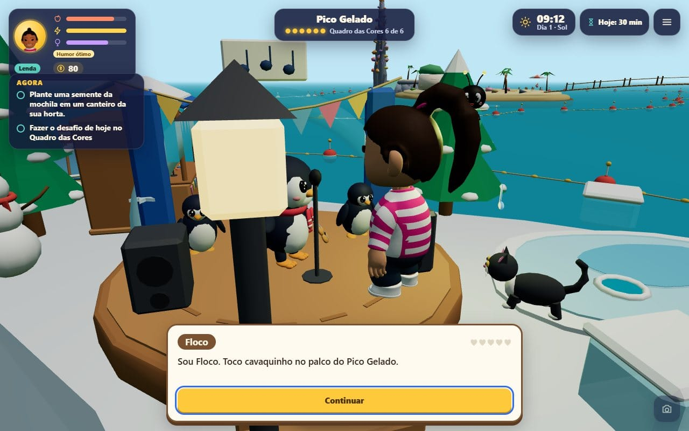
O Floco no palco. Sou Floco. Toco cavaquinho no palco do Pico Gelado.
Com 1 coração, o Mingau de milho; com 2, a página: A neve cobre tudo o que a gente não termina. Com 3, o Chapéu 1. Pedido no Estúdio: "A luz do iglu".
Montar a banda: três pinguins esperam sem instrumento. O xilofone está no iglu, o violão perto do lago congelado e a bateria no platô do cume. Com os três, começa o festival de inverno e chegam os instrumentos da banda.
Planador: presente do Floco no festival. No ar, pular de novo abre; pular outra vez fecha. O vento na frente da parede de gelo leva lá para cima. Vale em qualquer ilha.
Iglu: dá para entrar. Bancos de gelo e o fogareiro ("Fazer chocolate quente"); o primeiro traz a lareira.
Trenó ("Descer de trenó", no platô) e a corrida com 6 portões. Caverna de cristal atrás da montanha, com o cristal rosa.
Coleções: quatro notas musicais (a clave fica no alto da parede de gelo) e quatro cristais. O quiosque do festival mostra os minijogos do Pico.
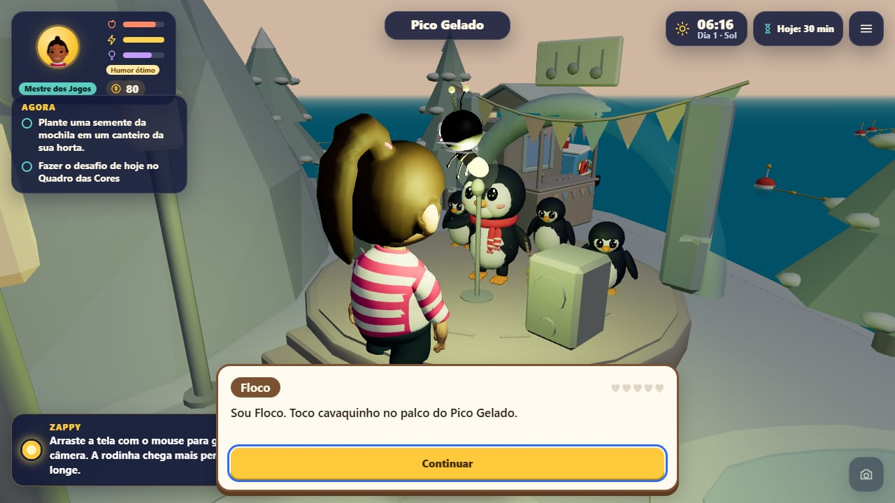
O palco do Floco, onde os pinguins da banda esperam os instrumentos.
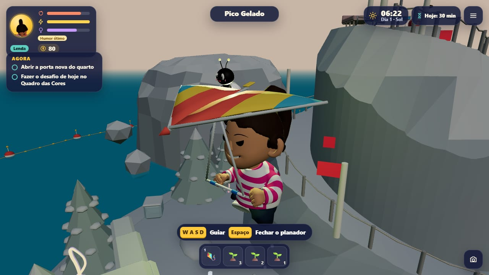
O planador aberto, presente do Floco no festival.
Quadro das Cores: a Fase do Pico
1Pulo com apoio
2A água volta ao começo
3A próxima fase
4Fim do jogo
5De volta à fase 1
6Flocos no gelo · Python
Desafios do dia: "Fase de plataforma" e as variações "pulo alto", "floco de neve" e "quedas". Do posto do Pico em diante, a casa ganha o andar de cima.
Posto 6 · Arquiteto(a) de Mundos
Vale dos Dinos
O vulcão, as pegadas, a escavação dos fósseis, os ninhos para proteger, o filhote e o dino de montaria.
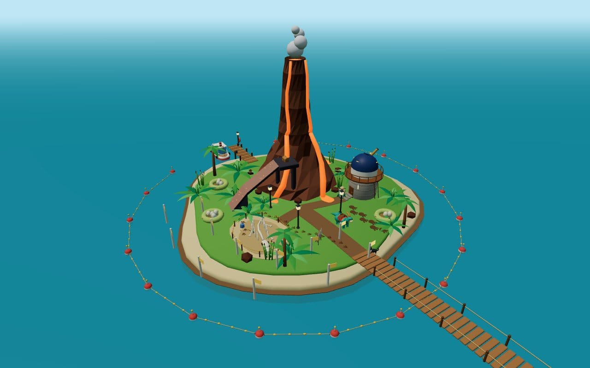
O Vale dos Dinos: o vulcão com os rios de lava, o observatório da Jade, os ninhos e a escavação.
Ficha do Vale posto 6 de 8
Moradora
Jade, a coruja dos fósseis. Gosta de milho e salada; aniversário em 18 de maio.
Brinquedos
pegadas, escavação, ninhos e ondas de cinza, ovo e filhote, montaria
Percursos
Trilha das pedras do vulcão (12 s) e Corrida da montaria (6 portões, 8 s)
Lumis
Ovinho (comum), Brotinho (raro), Brotinho de Luz (terraço da cinza quente)
Quadro 6
JavaScript na Ponte · Guardião dos ninhos: ondas e alcance
Desafio 3D
O ovo da Jade
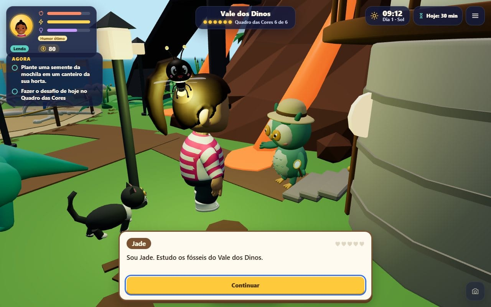
A Jade diante do observatório. Sou Jade. Estudo os fósseis do Vale dos Dinos.
Com 1 coração, o Açaí na tigela; com 2, a página: Guardei tantos rascunhos que virou uma montanha. Com 3, o Chapéu 4. Pedido no Estúdio: "A fogueira dos ninhos".
Pegadas: um rastro de três dedos da chegada até a escavação. Seguir até o fim registra no diário.
Escavação: "Tirar areia com cuidado", "Limpar com o pincel" e "Observar o fóssil". O fóssil traz o museu; depois, aparece um fóssil novo por dia, seis ao todo (dente, garra, vértebra, ovo fóssil, chifre de tricerátopo e crânio de rex). Quem demora não perde.
Ninhos: três ondas de cinza descem do vulcão. Perto do ninho, com a lanterna acesa, a luz espanta cada onda. Se uma passa, os ovos ficam bem e dá para tentar de novo.
Ovo e filhote: com os três ninhos cuidados, a Jade dá um ovo. Aquecido no chão quente do pé do vulcão em 3 dias, choca um tricerátopo filhote, que ganha nome, comida e carinho, cresce em 5 dias e pode ir junto.
Montaria: "Montar no dino", um parassaurolofo de sela, depois dos três ninhos. Montado, corre 6 m/s e pula mais alto; não entra na água nem sai do Vale.
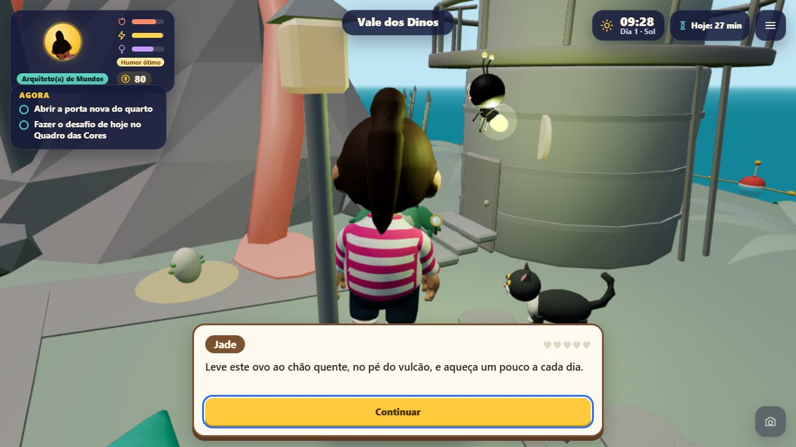
O ovo, que a Jade entrega depois dos três ninhos cuidados.
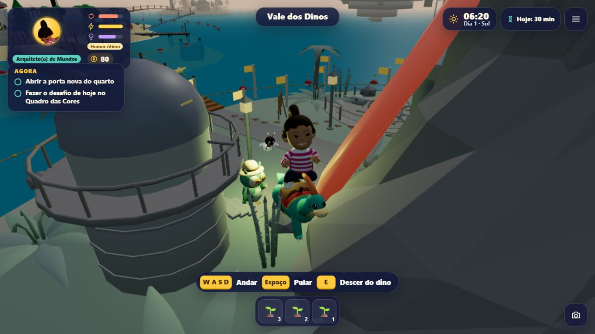
Montada no dino, a criança corre e pula mais alto.
Quadro das Cores: o Guardião dos ninhos
1Uma onda de cada vez
2O relógio da onda
3A cinza no ninho
4O alcance da torre
5Ondas que crescem
6Ondas e alcance · Ponte
Desafios do dia: "Guardião dos ninhos" e as variações "ondas maiores", "dois pontos", "três ondas" e "onda limpa". Do posto do Vale em diante, a casa ganha o quintal grande. O segredo do Vale é o terraço da cinza quente: a pé, a cinza empurra de volta; montado no dino, dá para subir.
Posto 7 · Gênio da Criação
Ilha das Nuvens
A ilha flutua 7 m acima do mar. Plataformas que sobem e descem, o balão, as constelações e o jardim do céu.
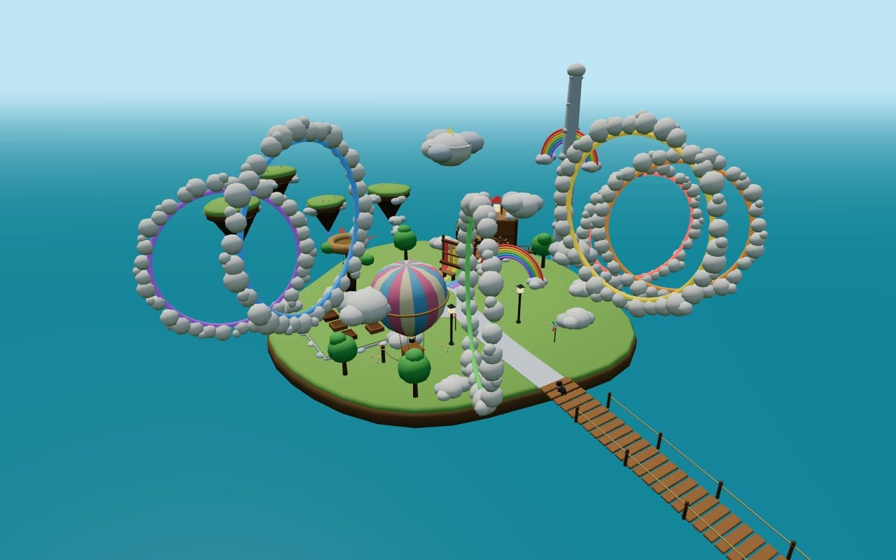
A Ilha das Nuvens, flutuando: as plataformas, o balão, a torre de nuvem com o arco-íris e o porto com a torre de escada até o mar.
Ficha das Nuvens posto 7 de 8
Moradora
Iriê, a tecelã. Gosta de tomate e pipoca; aniversário em 21 de setembro.
Brinquedos
plataformas, balão, constelações, jardim do céu, estrelas caídas
Percursos
Saltos entre nuvens (60 s) e Corrida de balão (6 argolas, 45 s)
Lumis
Algodão (comum), Pluma (rara), Pluma de Luz (nuvem do balão)
Quadro 6
Pro · Jardim das Nuvens: plantas juntas e jardim maior (vira atração)
Desafio 3D
A semente da Iriê
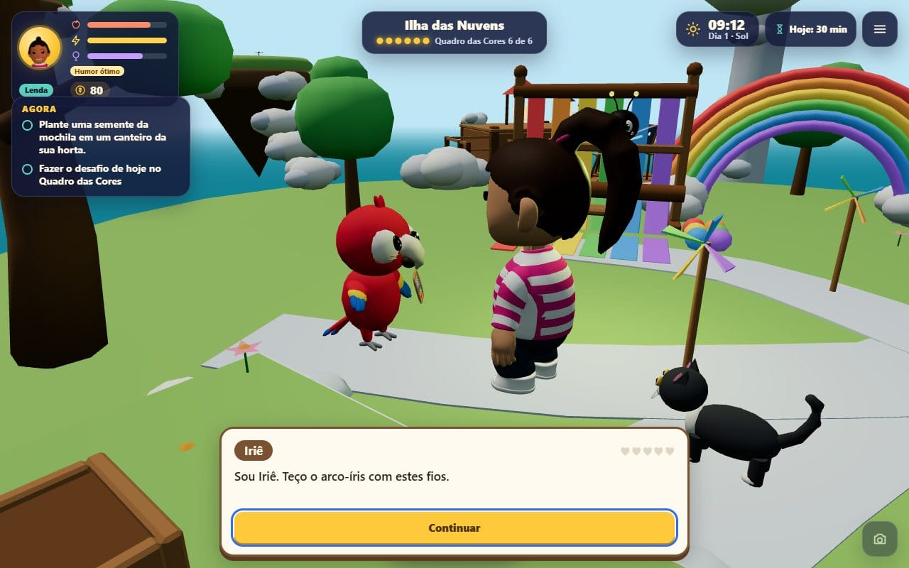
A Iriê.Sou Iriê. Teço o arco-íris com estes fios.
Com 1 coração, a Canjica; com 2, a página: Deixei a faísca para quem vier depois. Com 3, o Look 1. A terceira fala ensina a escolher o clima da sua ilha. Pedido no Estúdio: "O farol das nuvens".
Plataformas: quatro sobem e descem 2,4 m em ciclos, alternando os lados.
Balão ("Subir no balão"): segurar Pular acende o fogo e sobe; o direcional empurra para os lados; o teto é de 18 m e a brisa traz de volta quem se afasta.
Corrida de balão: as seis argolas na ordem do arco-íris (vermelha, laranja, amarela, verde, azul e roxa).
Constelações, no mirante, só à noite: segurar a figura no meio da vista acende. São seis: a arara, o balão, o vagalume, o peixe, o farol e a nota musical.
Jardim do céu: seis canteiros no terraço; a chuva das nuvens rega. A flor colhida vai para a sua ilha, que floresce em três níveis (1, 6 e 15 flores).
Quatro estrelas caídas aparecem só à noite. Do posto das Nuvens em diante, a casa ganha o terreno moldável.
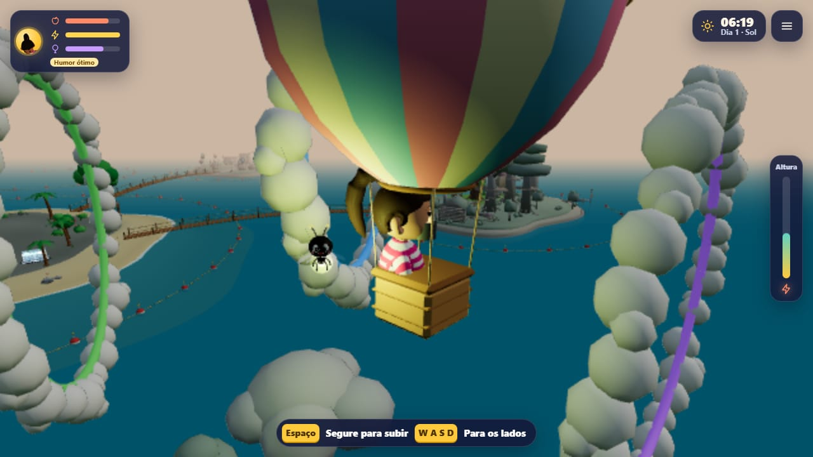
O balão: segurar Pular acende o fogo; a barra à direita mostra a altura.
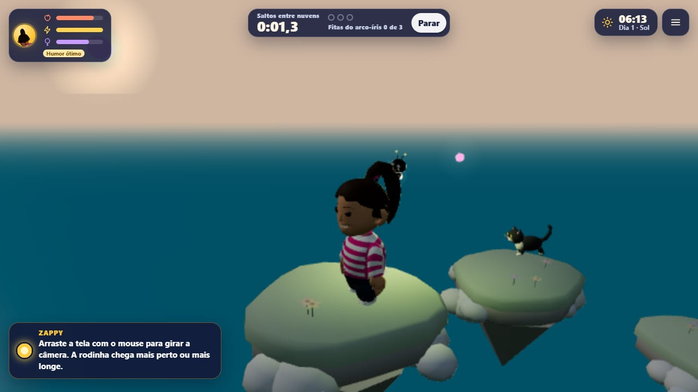
Saltos entre nuvens, na plataforma mais alta.
Quadro das Cores: o Jardim em grade
1Plantar com moedas
2Canteiro ocupado
3A produção do jardim
4Colher os canteiros
5A meta do jardim
6Jardim das Nuvens · Pro
Desafios do dia: "Jardim que floresce" e as variações "rega forte", "sol forte" e "chuva".
Capítulo 7 · Posto 8, Lenda
O Farol
A subida com tudo o que a criança aprendeu, a última página da Íris, os seis fachos e a galeria.
Antes da Lenda, a porta diz: O Farol abre na Lenda. Enquanto isso, há muito para criar nas ilhas.
Na Lenda, há dois caminhos: "Subir o Farol", a escada de dentro, direto à sala do alto; ou a Subida do Farol por fora, com escada, quinas para agarrar, viga de equilíbrio e o vento com o planador até a varanda.
A subida por fora pede o planador; sem ele, o Zappy explica onde consegui-lo. No resultado, o botão principal é "Entrar na sala do alto".
Na sala do alto, a mesa da Íris guarda a última página, em quatro trechos, sem pressa: Guardei meus rascunhos com medo de que não fossem bons o bastante. Foi dos rascunhos trancados que o Cinza nasceu.
Os seis fachos: a câmera se afasta, seis fachos alcançam as ilhas, um a cada 2 s, e o Farol fica aceso para sempre. Eu sou a primeira faísca da Íris.
A volta da Íris, perto da casa: Voltei para casa. Obrigada por abrir meus rascunhos.
Depois do final
Modo livre: todos os projetos azuis que faltam chegam de uma vez.
Galeria do Farol: seis pedestais em volta da lente, para expor criações dela (aparências do Pinta e do Molda, minijogos aprovados e jogos do Mural). "Expor aqui", "Tirar daqui" e "Jogar".
Projeto da Lenda, num cavalete a oeste do Farol: "Meu jogo do Arquipélago", em blocos, Python, JavaScript na Ponte ou Pro.
Em blocos e na Ponte, os critérios pedem andar, um encontro com efeito, guardar uma informação, um Se que a usa, recomeçar e combinar mecânicas dos três primeiros postos.
No Python e no Pro, o cenário é aberto: a ficha no começo do código guarda o objetivo e três funcionalidades.
Cada envio aprovado vai para a fila "Projetos da Lenda" da Sala do Professor; a criança vê o retorno da equipe no cartão do Farol. O extra é a versão 2: um envio novo que muda o jogo aprovado.
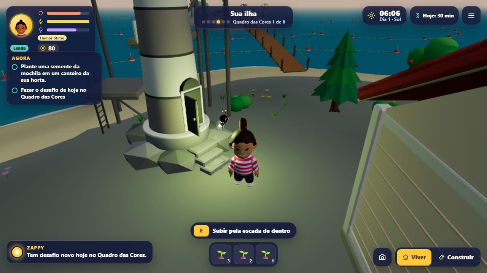
A porta do Farol, que abre na Lenda.
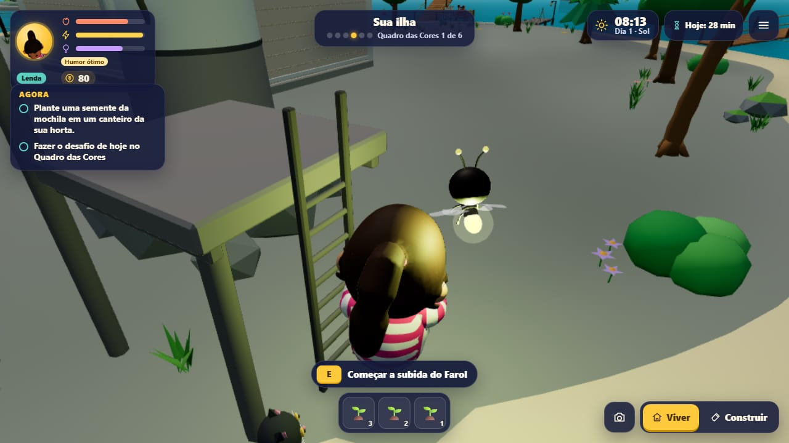
A subida por fora começa pela escada.
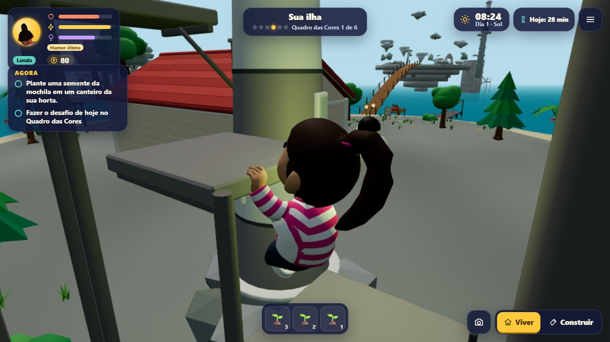
As quinas para agarrar e subir.
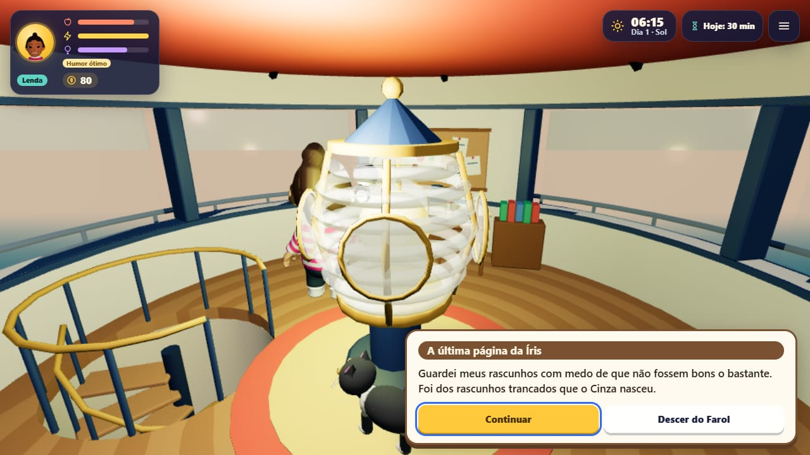
A última página da Íris, na mesa da sala do alto.Os seis fachos alcançam as ilhas.A Íris volta para casa.
Capítulo 8
Os Lumis
Pequenas luzes que nascem quando o Cinza é preso. Cada ilha tem uma família, e cada Lumi pode ganhar uma rotina feita em cartões ou blocos.
Ilha
Comum
Rara
De luz
Onde está o de luz
Sua ilha (praia)
Estrelinha
Búzio
Búzio de Luz
baú do vento
Bosque
Pitanga
Ipê
Ipê de Luz
baú do vento
Vila Doce
Quindim
Brigadeiro
Brigadeiro de Luz
baú do vento
Recife
Bolha
Pérola
Pérola de Luz
baú do vento
Pico
Gelinho
Cristal
Cristal de Luz
gruta debaixo do píer da sua ilha
Vale
Ovinho
Brotinho
Brotinho de Luz
terraço da montaria
Nuvens
Algodão
Pluma
Pluma de Luz
nuvem do balão
Como se acham
Na primeira noite, a criança recebe a lanterna.
À noite saem dois borrões do Cinza em cada ilha aberta. O borrão desbota tudo em volta dele. Sem a lanterna acesa, ele foge.
Com a lanterna, "Prender com a luz": o borrão chacoalha, vira faíscas e vira um Lumi. O primeiro de cada família é o comum; depois, um em cada cinco é o raro.
Os Lumis de luz nunca saem de borrão e nunca se compram: cada um mora num baú da Íris.
Os presos moram na ilha deles. Perto de um, aparece "Ensinar a rotina".
O caderno e a rotina
O Caderno dos Lumis (menu) tem três seções: Quando, Ação e Controle. Os cartões chegam pelo posto: Faísca (amanhecer, anoitecer, voar, regar, colher, guardar e Repetir), Construtor (Para cada e Esperar), Inventor (Enquanto), Explorador (Se), Mestre (Escolha) e Arquiteto (memória e Contar mais um).
A rotina começa com um Quando e segue em cartões, com controles que guardam cartões dentro. "Testar" faz uma prévia; "Guardar" deixa pronta.
"Montar com blocos" abre o mini estúdio de blocos, com a prévia passo a passo.
Na horta, um Lumi de cada vez voa, rega, colhe e guarda na geladeira. A rotina roda até com o jogo fechado.
Os borrões do Cinza desbotam tudo em volta deles à noite.Sem a lanterna, o borrão foge.Com a lanterna acesa, dá para prender o borrão com a luz.A rotina em cartões: Quando, ações e controles.O mini estúdio de blocos, com a prévia passo a passo.O Lumi trabalhando na horta, com o aviso no alto.
Capítulo 9
Desafios e cor
Os desafios são feitos no Estúdio, por cima do jogo, com o que a criança já aprendeu nos cursos. A cor é o prêmio principal; a moeda é extra.
Os tipos
Quadro das Cores: 6 quadros por ilha; cada um pinta um pedaço.
Desafio do dia: um por dia, fixo até a meia-noite. Os não feitos vêm primeiro; dia par puxa a ilha mais nova, dia ímpar as anteriores. Nunca pinta.
Pedido de morador: um por ilha, no cartão "Pedido no Estúdio" da conversa.
Desafio 3D: um por ilha, com os blocos 3D da trilha.
As situações de um quadro
Cor de volta (com "Fazer de novo") · Pronto para fazer (com "Fazer o desafio") · Abre quando a ilha abrir · Aprenda primeiro em (o curso do bloco que falta) · Abre depois do curso (Python, Ponte e Pro).
As linguagens
Blocos: sempre. Quadros 1 a 5 de todas as ilhas, os seis da sua ilha, do Bosque e da Vila, e os desafios do dia. Só blocos que a trilha dos postos 1 a 3 ensina.
Python (Pygame Zero): o quadro 6 do Recife e do Pico, depois do curso-base do Explorador.
JavaScript na Ponte: o quadro 6 do Vale, depois do curso-base do Arquiteto.
Pro (TypeScript): o quadro 6 das Nuvens, depois do curso-base do Gênio.
Atrações
O primeiro minijogo aprovado traz o fliperama para casa. A barraca da Vila e o quiosque do Pico mostram os da ilha, e a galeria do Farol pode expor.
Tipo
Moedas
Extra
Pinta?
Quadro das Cores
20
10
sim, um pedaço
Desafio do dia
10
5
não
Desafio 3D
10
5
não
Pedido de morador no Estúdio
5
2
não (a placa acende)
Projeto da Lenda
20
10
não
Cada desafio, com o pedido do morador, o que conta como feito e o extra, está no capítulo 10.
Teto de 100 moedas do jogo por semana. O que passa do teto espera a semana seguinte e nunca se perde. "Feito" vale para sempre: refazer é permitido, mas não paga de novo.
Capítulo 10
Missões, minijogos e desafios, ilha por ilha
Para cada ilha: o minijogo que ela monta no Estúdio, as missões no mundo e cada um dos 85 desafios, com o pedido do morador como a criança lê, o que conta como feito, o extra e as dicas na ordem em que aparecem.
Os textos dos desafios saem dos arquivos que a equipe importa no Admin (a versão Kids; a adulta tem o mesmo conteúdo, com textos próprios). "Conta como feito" são os objetivos obrigatórios conferidos pelo executor; as dicas aparecem uma a uma, do lembrete do objetivo ao texto técnico.
O Pega-conchas: o guia anda pela areia, pega as conchas e entrega no balde do Nico. Cada quadro acrescenta uma parte (andar, pegar, entregar, escolher a concha certa, recomeçar e as três conchas). Os seis quadros devolvem a cor da casa, da horta, do píer, da praia, do gramado e da trilha das pedras. O jogo pronto vira a atração Pega-conchas.
As missões no mundo
Primeiros passos
As 23 falas do Zappy: andar, olhar, pular, abrir a porta nova, plantar, regar, colher e a primeira obra. Prêmio: a geladeira.
Abrir a porta nova
Sai do quarto e acende a casa. Libera o modo Construir.
O pedido da ilha
Plantar, regar e colher pela primeira vez (cresce em minutos). Prêmio: o projeto azul da geladeira e a cor da horta.
O primeiro peixe
Lançar e recolher a linha no píer. Prêmio: a cor do píer e o peixe no álbum.
As quatro chaves
Cozinha, sala, banheiro e quintal, escondidas no gramado. Cada uma libera mais um cômodo (a do quintal, cerca, caminho e canteiro).
Coleções da praia
Cinco conchas, a estrela-do-mar e cinco peixes para o álbum.
Pedidos do Nico
Um por dia: uma alface, um milho ou uma salada. Paga 3 moedas, amizade e uma cesta. Com 3 corações, o Chapéu 2.
Os três segredos
O vento atrás da horta (planador), o deque alto do cipó (depois do Bosque) e a gruta debaixo do píer (depois do mergulho do Recife). Cada um tem um baú com uma página extra.
Quadro 1Blocos
Passos na areia
O Nico quer mostrar a praia, mas o guia não sai do lugar. Ele quer que as setas levem o guia pela areia, sem passar da borda da tela.
Conta como feito quando
A seta para a direita leva o guia pela areia.
Segurando a seta, o guia para na borda da tela.
Mais um desafio
Complete o evento Enter para recomeçar a praia do início.
Dicas (4)
Lembre o objetivo: A seta para a direita leva o guia pela areia.
Use o bloco que move com as setas visto de cima e o bloco que segura o personagem na tela.
O cenário já está pronto. Complete somente as ações indicadas.
A praia está pronta, mas o guia ainda não sai do lugar. No laço que roda a cada quadro, faça as setas moverem o guia. Ele precisa continuar dentro da praia, sem passar da borda da tela.
Quadro 2Blocos
A primeira concha
Há uma concha na areia. O Nico quer que o guia pegue a concha ao encostar nela, lembre que está com ela e que a concha saia da areia.
Conta como feito quando
No contato, o guia guarda que tem a concha.
Passar por cima da concha não pega; descer até ela pega.
Mais um desafio
Complete o evento Enter para recomeçar a praia do início.
Dicas (4)
Lembre o objetivo: No contato, o guia guarda que tem a concha.
O evento de contato já está no espaço de blocos. Dentro dele vão duas ações.
O cenário já está pronto. Complete somente as ações indicadas.
Há uma concha na areia. No contato do guia com a concha, guarde verdadeiro em temConcha e tire a concha da areia. Assim o guia lembra que pegou a concha, e ela não aparece de novo.
Quadro 3Blocos
O balde do Nico
O Nico guarda conchas num balde. Ele quer receber a concha só se o guia estiver com ela; sem concha, ele pede uma.
Conta como feito quando
Pegue a concha e entregue no balde.
Sem a concha, o balde marca que o Nico pediu.
Sem a concha o balde espera; buscar a concha e voltar entrega.
Mais um desafio
Complete o evento Enter para recomeçar a praia do início.
Dicas (4)
Lembre o objetivo: Pegue a concha e entregue no balde.
A informação temConcha decide. O Se entrega, o Senão pede.
O cenário já está pronto. Complete somente as ações indicadas.
O Nico guarda as conchas num balde. No contato com o balde, entregue só se o guia tiver a concha: marque entregue e deixe temConcha falso. Sem a concha, use o Senão para marcar pediu, e o Nico pede uma concha.
Quadro 4Blocos
A concha rosa
O Nico só quer a concha rosa, que fica mais no alto. Ele quer que o balde aceite só a rosa; com a cinza ou sem nada, ele pede de novo.
Conta como feito quando
Pela concha rosa, o balde recebe a entrega.
Só com a cinza, o Nico pede a rosa e nada é entregue.
Mais um desafio
Complete o evento Enter para recomeçar a praia do início.
Dicas (4)
Lembre o objetivo: Pela concha rosa, o balde recebe a entrega.
Só uma das duas informações decide a entrega. A cinza não serve para o Nico.
O cenário já está pronto. Complete somente as ações indicadas.
Agora há duas conchas. A cinza fica no caminho e já marca temCinza. A rosa fica mais no alto. Pegue a rosa guardando temRosa e tirando a concha da areia. No balde, entregue só com a rosa. Com a cinza ou sem nada, o Senão marca pediu.
Quadro 5Blocos
A maré volta
O Nico quer brincar de novo. Ele quer que o Enter faça a praia voltar como era: a concha na areia, o guia no começo e nada entregue.
Conta como feito quando
Depois da entrega, Enter traz a praia de volta.
Enter devolve a concha para a areia.
Mais um desafio
Faça a barra de espaço também recomeçar a praia. No controle da tela, use A.
Dicas (4)
Lembre o objetivo: Depois da entrega, Enter traz a praia de volta.
Há um bloco que recomeça o jogo inteiro. Ele vai dentro do evento da tecla Enter.
O cenário já está pronto. Complete somente as ações indicadas.
O jogo da concha já funciona. Falta recomeçar: complete o evento da tecla Enter para que a praia volte como era, com a concha na areia, o guia no começo e nada entregue.
Quadro 6Blocos
Pega-conchas
O Nico quer as três conchas da praia, inclusive a do alto. Ele quer que o balde só fique cheio quando as três tiverem sido pegas.
Conta como feito quando
Com as três conchas, o balde fica cheio.
Sem a concha do alto, o balde continua esperando.
Mais um desafio
Complete o evento Enter para recomeçar a praia do início.
Dicas (4)
Lembre o objetivo: Com as três conchas, o balde fica cheio.
Use pegou1, pegou2 e pegou3. Um Se dentro do outro confere as três antes de encher o balde.
O cenário já está pronto. Complete somente as ações indicadas.
Três conchas esperam na praia, uma delas no alto. Cada concha guarda a própria informação quando o guia encosta e sai da areia. O balde só fica cheio se as três foram pegas. Com alguma faltando, o balde continua esperando.
Desafio do diaBlocos
Pega-conchas: o aviso do Nico
O Nico nunca sabe quando falta concha no balde. Ele quer um aviso quando alguma das três ficar na praia, e o balde cheio como antes quando chegarem as três.
Conta como feito quando
Sem a concha do alto o Nico avisa; buscando a do alto, o balde enche.
Mais um desafio
Complete o evento Enter para recomeçar a praia do início.
Dicas (4)
Lembre o objetivo: Sem a concha do alto o Nico avisa; buscando a do alto, o balde enche.
Cada Se que confere uma concha ganha um senão. Em cada senão, guarde verdadeiro em falta.
O Pega-conchas já está pronto. Mude somente a regra indicada.
O Pega-conchas já funciona. Complete o balde: quando faltar alguma das três conchas, guarde verdadeiro em falta. Com as três, o balde continua enchendo como antes.
Desafio do diaBlocos
Pega-conchas: só a rosa
Hoje o Nico só quer a concha rosa, a do alto. Ele quer que o balde fique cheio com ela, mesmo sem as conchas da areia, e que as da areia sozinhas não encham.
Conta como feito quando
Só com a concha rosa, o balde fica cheio.
Mais um desafio
Complete o evento Enter para recomeçar a praia do início.
Dicas (4)
Lembre o objetivo: Só com a concha rosa, o balde fica cheio.
Tire do balde os Se de pegou1 e de pegou3 e deixe só o de pegou2.
O Pega-conchas já está pronto. Mude somente a regra indicada.
O Pega-conchas já funciona com as três conchas. Mude o balde para encher só com a concha rosa, a do alto: confira apenas pegou2. As conchas da areia não enchem o balde sozinhas.
Desafio do diaBlocos
Pega-conchas: esvaziar o balde
O balde do Nico encheu e ele quer brincar de novo sem recomeçar a praia. Ele quer que a barra de espaço esvazie o balde.
Conta como feito quando
Com o balde cheio, a barra de espaço esvazia.
Mais um desafio
Complete o evento Enter para recomeçar a praia do início.
Dicas (4)
Lembre o objetivo: Com o balde cheio, a barra de espaço esvazia.
O evento da barra de espaço já está no espaço de blocos. Dentro dele vai uma ação só.
O Pega-conchas já está pronto. Mude somente a regra indicada.
O Pega-conchas já funciona. Complete a barra de espaço: ela guarda falso em cheio, e o aviso do balde cheio some. No controle da tela, use A.
Pedido no EstúdioBlocos
A placa da noite
O Nico pendurou uma placa na praia, mas à noite ninguém consegue ler. Programe a barra de espaço para acender a placa: dentro do evento, guarde verdadeiro em acesa. O Se que desenha a placa acesa ou apagada já está pronto.
Conta como feito quando
A barra de espaço acende a placa.
Andar com as setas não acende a placa.
Mais um desafio
Faça o Enter apagar a placa de novo, guardando falso em acesa.
Dicas (2)
O evento da barra de espaço já está no espaço de blocos. Dentro dele vai uma ação só.
A informação acesa começa falsa. O Se olha para ela a cada quadro.
Desafio 3DBlocos 3D
A concha do Nico
O Nico perdeu a concha mais bonita da praia. Ache a concha e leve até ele. A ilha, o personagem, o Nico e a concha já estão no jogo. Programe os dois encontros: quando o personagem encostar na concha, esconda a concha e guarde verdadeiro em temItem; quando encostar no Nico, use um Se para entregar só com o item.
Conta como feito quando
Encostar no item guarda que o personagem está com ele.
Com o item, encostar no Nico entrega.
Sem o item, o Nico pede e nada é entregue.
Mais um desafio
Faça a tecla R recomeçar a aventura.
Dicas (4)
Os dois blocos de encontro já estão no espaço de blocos, vazios. O primeiro é com o item; o segundo, com o Nico.
A informação temItem começa falsa. Ela guarda que o personagem pegou o item, mesmo depois que ele some.
No encontro com o Nico, um Se olha temItem. Com o item, guarde verdadeiro em entregue; sem ele, guarde verdadeiro em pediu.
Para entregar uma vez só, coloque tudo dentro de um Se que confere que ainda não entregou.
Bosque dos Bichos 11 desafios
O minijogo da ilha
A Chuva de pinhas: o coelho desvia das pinhas que caem e joga bolotas para quebrá-las, com vidas, fim e outra partida. Os quadros 1 a 5 montam esse jogo, um passo por quadro (grupos, relógio, encontro, vidas e recomeçar). O quadro 6 é a Corrida dos bichos: quatro bichos correm com passos sorteados até a chegada. Os dois viram atrações.
As missões no mundo
Esconde-esconde
Achar os quatro bichos (cachorro, gato, coelho e porquinho) pelas pegadas. Prêmio: uma salada e a receita da Salada colorida.
Adotar e cuidar
Até três bichos, com nome. Barriga, limpeza e carinho; cresce em 7 dias bem cuidado e aprende um truque na 5ª aula.
Percurso nas copas
Dos deques ao escorregador, com 5 vagalumes. Três estrelas: chegar, em até 24 s, achar o escondido.
Pedidos da Capi
Alfaces, tomates, milho, salada, pipocas ou achar mais um bicho. Com 2 corações, a página do diário; com 3, o Colar de coração.
Os dois segredos
O baú no alto do vento (planador, Ipê de Luz) e o vão da pista que só os patins passam (página extra).
Quadro 1Blocos
Pinhas caindo
O vento derruba pinhas do pinheiro grande, mas no jogo do coelho elas ainda não caem. A Capi quer que, de tempos em tempos, uma pinha caia do alto bem em cima de onde o coelho está, para ele precisar sair do lugar.
Conta como feito quando
Depois da largada, pinhas caem no grupo das pinhas.
As pinhas nascem no relógio da partida, no grupo pinhas.
Mais um desafio
Faça um som tocar a cada bolota que o coelho joga.
Dicas (3)
O relógio da partida já marca a hora de uma pinha nova.
A pinha nasce acima da tela, no meio do coelho, e cai devagar.
As pinhas moram num grupo: o grupo já anda, se desenha e tira o que saiu da tela.
Quadro 2Blocos
Bolotas para o alto
O coelho guarda bolotas na toca. A Capi quer que a barra de espaço faça o coelho jogar uma bolota para cima, saindo de onde ele está, só durante a partida.
Conta como feito quando
Na partida, espaço joga uma bolota no grupo das bolotas.
A bolota só sai durante a partida.
Mais um desafio
Faça a pinha quebrada explodir.
Dicas (3)
As bolotas também moram num grupo, separado do das pinhas.
A bolota sai do meio do coelho e sobe: a velocidade para cima é negativa.
Na tela de abertura e na de fim, o espaço não joga nada.
Quadro 3Blocos
Quebrar as pinhas
As bolotas atravessam as pinhas sem acontecer nada. A Capi quer que, quando uma bolota encontra uma pinha, as duas sumam e o placar ganhe um ponto.
Conta como feito quando
Uma bolota que encontra uma pinha soma um ponto.
No encontro, a bolota e a pinha saem dos grupos delas.
Mais um desafio
Faça a tela tremer quando uma pinha cair no coelho.
Dicas (3)
Há um encontro entre o grupo das bolotas e o das pinhas esperando a sua regra.
Tire a bolota do grupo dela e a pinha do grupo dela.
O ponto conta uma vez a cada encontro.
Quadro 4Blocos
Três vidas
Quando uma pinha cai no coelho, nada muda. A Capi quer que o coelho comece cada partida com três vidas, mostradas em corações, e perca uma a cada pinha que cair nele.
Conta como feito quando
O coelho começa com três vidas e perde uma quando uma pinha cai nele.
As vidas do coelho começam em 3.
Mais um desafio
Faça um som tocar a cada bolota que o coelho joga.
Dicas (3)
As vidas do coelho começam junto com a partida.
A pinha que acerta o coelho já some; falta tirar uma vida dele.
Os corações mostram quantas vidas sobraram.
Quadro 5Blocos
Fim e outra partida
Mesmo sem vidas, o coelho continua no jogo. A Capi quer que a partida acabe quando as vidas acabarem e que Enter, na tela de fim, comece tudo de novo, com as vidas e os pontos do começo.
Conta como feito quando
Sem vidas, a partida acaba; Enter na tela de fim começa outra com três vidas.
Quando as vidas acabam, o jogo vai para a tela de fim.
Mais um desafio
Crie uma tela de vitória para quem quebrar dez pinhas, e Enter recomeça dela também.
Dicas (3)
Confira a cada quadro se as vidas do coelho acabaram.
O fim é uma tela do jogo, como a abertura.
Recomeçar o jogo zera tudo o que a partida mudou.
Quadro 6Blocos
Corrida dos bichos
A Capi organizou uma corrida entre o cachorro, o gato, o coelho e o porquinho. Ela quer uma largada que ponha os quatro no começo, passos sorteados para cada um e um vencedor só: o primeiro a chegar diz Ganhei e todos param.
Conta como feito quando
A Largada traz os quatro bichos de volta ao começo.
Os quatro bichos avançam enquanto a corrida está acontecendo.
Cada bicho sorteia um passo curto ou longo dentro do laço.
Ao tocar a chegada, o cachorro diz Ganhei se a corrida ainda estiver acontecendo.
Ao tocar a chegada, o gato diz Ganhei se a corrida ainda estiver acontecendo.
Ao tocar a chegada, o coelho diz Ganhei se a corrida ainda estiver acontecendo.
Ao tocar a chegada, o porquinho diz Ganhei se a corrida ainda estiver acontecendo.
A corrida tem um vencedor e todos param na chegada.
Mais um desafio
Antes da Largada, use a seta indicada ao lado do bicho com que quer jogar. Ele só deve avançar quando você apertar a barra de espaço ou A no controle. Os outros continuam correndo sozinhos. A mesma seta desfaz a escolha antes da largada.
Dicas (5)
Lembre o objetivo: A Largada traz os quatro bichos de volta ao começo.
Use o evento Quando apertar Enter, como na Nave. O botão + do controle faz a mesma coisa.
Você já sorteou posições na Nave. Compare o sorteio com a metade da pista para escolher um passo curto ou longo.
O cachorro, o gato, o coelho e o porquinho querem correr. Faça Enter dar a largada e colocar os quatro no começo. No controle da tela, use +. Dentro de um laço, sorteie passos curtos ou longos para cada bicho. O primeiro que tocar a chegada deve dizer Ganhei. Nesse momento, todos param.
Depois, a Largada deve permitir outra corrida.
Desafio do diaBlocos
Corrida dos bichos: pedras
A Capi pôs pedras na pista da corrida. Ela quer que cada bicho suba antes da pedra e desça depois dela, voltando à sua faixa, e que a corrida continue com um vencedor só.
Conta como feito quando
Os quatro bichos sobem para passar pelas pedras.
Depois das pedras, os bichos voltam ao chão e a corrida tem um vencedor.
Mais um desafio
Faça a barra de espaço dar outra largada: os quatro voltam ao começo e começam a correr de novo. No controle da tela, use A.
Dicas (5)
Lembre o objetivo: Os quatro bichos sobem para passar pelas pedras.
Observe a posição do bicho antes de começar o pulo.
Uma velocidade para cima faz subir. Uma velocidade para baixo faz descer.
Conte os passos do pulo para subir e descer a mesma distância.
A corrida já funciona, mas há pedras na pista. Faça cada bicho subir antes da pedra e descer depois dela, voltando à sua faixa. A corrida continua tendo um único vencedor. Use a Largada para testar quantas vezes quiser.
Desafio do diaBlocos
Corrida dos bichos: noite
Anoiteceu no Bosque e a Capi não enxerga a pista. Ela quer que o espaço clareie a pista sem tirar nenhum bicho do lugar.
Conta como feito quando
Espaço ou A ilumina a pista sem tirar os bichos do lugar.
Mais um desafio
Faça a mesma tecla alternar: um aperto acende, outro apaga, e outro acende de novo.
Dicas (5)
Lembre o objetivo: Espaço ou A ilumina a pista sem tirar os bichos do lugar.
A camada noite está desenhada por cima da pista.
Uma opacidade menor deixa aparecer o que está atrás.
Use o evento Quando apertar espaço.
Anoiteceu no Bosque. A corrida está pronta, mas a pista está escura. Programe a barra de espaço para diminuir a opacidade da camada noite. No controle da tela, use A. A pista deve ficar visível sem mudar a posição dos bichos.
Desafio do diaBlocos
Corrida dos bichos: placar
A Capi quer saber quem ganha mais corridas. Ela quer que só o vencedor de cada corrida ganhe uma vitória no placar, e que as vitórias fiquem guardadas para a próxima largada.
Conta como feito quando
A vitória do cachorro soma um ponto no placar dele.
A vitória do gato soma um ponto no placar dele.
A vitória do coelho soma um ponto no placar dele.
A vitória do porquinho soma um ponto no placar dele.
O placar registra uma única corrida, sem continuar contando depois da chegada.
A Largada preserva as vitórias da corrida anterior.
Mais um desafio
Programe a barra de espaço para deixar as quatro contagens em zero. No controle da tela, use A.
Dicas (5)
Lembre o objetivo: A vitória do cachorro soma um ponto no placar dele.
Cada bicho tem sua própria variável de vitórias.
Some o ponto no mesmo momento em que o vencedor diz Ganhei.
Zerar a posição para outra corrida é diferente de zerar o placar.
A corrida está pronta e o placar começa em zero. Some uma vitória ao bicho que chegar primeiro. Os outros não ganham ponto. O número não deve continuar subindo depois da chegada. Na próxima Largada, guarde as vitórias anteriores.
Pedido no EstúdioBlocos
A lanterna da cabana
A Capi quer uma lanterna na porta da cabana que liga e desliga no mesmo botão. Programe a barra de espaço: se a lanterna está acesa, ela apaga; senão, ela acende.
Conta como feito quando
A barra de espaço acende a lanterna.
Apertando de novo, a lanterna apaga.
Mais um desafio
Faça o Enter apagar a lanterna sempre, sem acender de novo.
Dicas (2)
O evento da barra de espaço já está pronto. Dentro dele vai um Se com senão.
O Se olha para acesa. Em um lado, guarde falso; no outro, guarde verdadeiro.
Desafio 3DBlocos 3D
O coelhinho da Capi
Um coelhinho fugiu do cercado da Capi. Ache o coelhinho e leve de volta para ela. A ilha, o personagem, a Capi e o coelhinho já estão no jogo. Programe os dois encontros: quando o personagem encostar no coelhinho, esconda o coelhinho e guarde verdadeiro em temItem; quando encostar na Capi, use um Se para entregar só com o item.
Conta como feito quando
Encostar no item guarda que o personagem está com ele.
Com o item, encostar na Capi entrega.
Sem o item, a Capi pede e nada é entregue.
Mais um desafio
Faça a tecla R recomeçar a aventura.
Dicas (4)
Os dois blocos de encontro já estão no espaço de blocos, vazios. O primeiro é com o item; o segundo, com a Capi.
A informação temItem começa falsa. Ela guarda que o personagem pegou o item, mesmo depois que ele some.
No encontro com a Capi, um Se olha temItem. Com o item, guarde verdadeiro em entregue; sem ele, guarde verdadeiro em pediu.
Para entregar uma vez só, coloque tudo dentro de um Se que confere que ainda não entregou.
Vila Doce 11 desafios
O minijogo da ilha
A corrida do entregador, sobre o curso Corre, Dino!: o entregador do Bento pula as pedras da rua, com abertura, fim, batida justa, pedras sorteadas e dificuldade com teto. O quadro 6 corre pelos telhados, pulando chaminés, com o bolo dourado que vale o dobro. Vira a atração Corrida do entregador na barraca do jogo.
As missões no mundo
As receitas do Bento
A cada coração, uma receita: bolo de fubá, pão de queijo, brigadeiro e chocolate quente. Com 1 coração chega o forno; com 2, a página do diário; com 3, a Manga longa.
Turnos nos balcões
Padaria, sorveteria e barraca de sucos: seis fregueses por turno. O primeiro turno do dia em cada balcão paga 5 moedas e ingredientes.
Entrega pelos telhados
Caixotes, casinhas e o terraço da sorveteria, com 4 confeitos e dois atalhos. A primeira chegada dá os patins.
A lanterna e os borrões
Na noite, a lanterna do Bento prende os borrões e solta os Lumis (Quindim e Brigadeiro).
A feira da semana
Comprar aparências e insumos e vender pratos na banca (uma venda por dia).
O segredo
O baú no alto do vento (planador), com o Brigadeiro de Luz.
Quadro 1Blocos
O entregador pula
O Bento separou os doces da padaria, mas o entregador está flutuando no meio da rua. Ele precisa cair até o chão e pular quando alguém aperta Espaço, a seta para cima ou toca na tela, sempre a partir do chão.
Conta como feito quando
Depois da largada, o entregador cai até o chão da rua.
No chão, Espaço faz o entregador subir.
A cada quadro, a gravidade age antes do controle do pulo.
Mais um desafio
Faça um som tocar a cada pulo do entregador.
Dicas (3)
Pense no que puxa o entregador para baixo a cada quadro da corrida.
Primeiro a gravidade age; depois o controle decide se é hora de pular.
O controle do dinossauro só deixa pular quando os pés estão no chão.
Quadro 2Blocos
Pedras na rua
A rua da Vila tem pedras soltas, mas nenhuma aparece na corrida. O Bento quer que, de tempos em tempos, uma pedra entre pela direita da tela e venha na direção do entregador.
Conta como feito quando
Depois da largada, pedras entram na rua de tempos em tempos.
Sem pular, uma pedra alcança o entregador e a corrida acaba.
As pedras nascem no relógio da corrida, só durante a corrida.
Mais um desafio
Quando o entregador bater, faça a pedra explodir e a tela tremer antes de mostrar o fim.
Dicas (3)
O relógio da corrida já marca o tempo certo para uma pedra nova.
A pedra nasce fora da tela, à direita, e anda para a esquerda.
A velocidade das pedras já está guardada numa variável do jogo.
Quadro 3Blocos
Começar e recomeçar
A tela de abertura da corrida está pronta, mas nada acontece quando alguém aperta uma tecla. O Bento quer que uma tecla ou um toque comece a corrida e que, depois de um tombo, a mesma ação traga a corrida de volta ao começo.
Conta como feito quando
A corrida espera na tela de abertura e começa com uma tecla.
Depois do tombo, uma tecla traz a corrida de volta à abertura, com os metros em zero.
A abertura começa a corrida, e o fim a recomeça, no mesmo evento.
Mais um desafio
Mostre na tela de fim quantos metros o entregador correu.
Dicas (3)
O jogo sabe em que tela está: abertura, corrida ou fim.
Na abertura, a tecla muda a tela para a corrida.
No fim, a tecla recomeça o jogo inteiro, com os metros em zero.
Quadro 4Blocos
A batida
O entregador atravessa as pedras como se elas não existissem. O Bento quer que encostar numa pedra encerre a corrida, sem injustiça: só conta a batida quando a pedra encosta de verdade no corpo do entregador, não no espaço em volta do desenho.
Conta como feito quando
Encostar numa pedra encerra a corrida.
A batida com uma pedra leva a corrida à tela de fim.
A área da batida do entregador fica entre 50% e 95% do desenho.
Mais um desafio
Quando o entregador bater, faça a pedra explodir e a tela tremer antes de mostrar o fim.
Dicas (3)
Há um encontro entre o entregador e o grupo das pedras esperando a sua regra.
Quando a corrida acaba, o jogo vai para a tela de fim.
A área da batida pode ser um pouco menor que o desenho.
Quadro 5Blocos
Cada pedra num lugar
As pedras chegam sempre do mesmo ponto e com o mesmo tamanho, então a corrida fica fácil de decorar. O Bento quer que cada pedra apareça num lugar sorteado, à direita da tela, e com um tamanho diferente, sem ficar alta demais para o pulo.
Conta como feito quando
Cada pedra entra num lugar sorteado, sempre à direita da tela.
Cada pedra tem um tamanho sorteado entre 20 e 50, que o entregador consegue pular.
Mais um desafio
Faça um som tocar a cada pulo do entregador.
Dicas (3)
Um sorteio entre dois números dá um valor diferente a cada pedra.
O lugar sorteado precisa começar fora da tela, à direita.
Pedras maiores que 50 ficam altas demais para o pulo do entregador.
Quadro 6Blocos
A corrida do entregador
O Bento precisa de um jogo para a barraca da feira: o entregador corre pelos telhados da Vila, pulando as chaminés. Os clientes estão com pressa: ele quer que cada chaminé nova venha um pouco mais rápida que a anterior e que, quando o entregador encostar numa chaminé, a tela do fim mostre quantos metros ele correu.
Conta como feito quando
Cada chaminé nova deixa a próxima um pouco mais rápida.
Encostar numa chaminé encerra a corrida e a tela do fim mostra os metros.
Um único bloco muda a velocidade no projeto inteiro.
Mais um desafio
Um bolo dourado passa pela rua. Faça o entregador pegar o bolo: ele vale o dobro, 2 metros de uma vez, e volta para o começo da rua.
Dicas (3)
A velocidade das chaminés é um número negativo: quanto menor, mais rápido. Pare de acelerar em -9, para a corrida continuar possível.
A mudança acontece no mesmo relógio que cria cada chaminé.
Na tela do fim, desenhe o placar com a variável metros.
Desafio do diaBlocos
Pedras maiores
Hoje a rua tem pedras maiores, e o pulo do entregador ficou baixo demais para passar por cima delas. O Bento quer um pulo mais forte, sem exagero, para o entregador voltar a passar.
Conta como feito quando
Com o pulo novo, o entregador sobe mais alto que as pedras grandes.
A força do pulo fica entre 12 e 16.
Mais um desafio
Faça um som tocar a cada pulo do entregador.
Dicas (2)
A força do pulo está no controle do dinossauro.
Teste a corrida depois de cada mudança na força.
Desafio do diaBlocos
Pombos na praça
Hoje há pombos voando baixo pela praça, além das pedras e dos vasos da floricultura. O Bento quer que a corrida sorteie o que aparece na rua. Para passar pelos pombos, o entregador abaixa com a seta para baixo.
Conta como feito quando
A rua sorteia o que aparece: pedras, vasos e pombos voando baixo.
Mais um desafio
Quando o entregador bater, faça a pedra explodir e a tela tremer antes de mostrar o fim.
Dicas (2)
O tipo do obstáculo tem uma opção que sorteia a cada vez.
Os pombos voam na altura da cabeça: abaixar faz o entregador passar.
Desafio do diaBlocos
Quem não vê a tela
Uma cliente do Bento usa um leitor de tela. Antes de começar, ela quer ouvir o objetivo da corrida e os três jeitos de pular: com Espaço, com a seta para cima e com um toque.
Conta como feito quando
A descrição da corrida diz o objetivo e os três jeitos de pular.
Mais um desafio
Mostre na tela de fim quantos metros o entregador correu.
Dicas (2)
A descrição do palco é o texto que o leitor de tela fala.
Fale das pedras e dos três controles do pulo.
Pedido no EstúdioBlocos
O letreiro da confeitaria
O Bento quer o letreiro da confeitaria aceso quando a fornada estiver pronta. Cada barra de espaço já assa um bolo. Complete: quando bolos chegar a 3, guarde verdadeiro em acesa.
Conta como feito quando
O letreiro acende no terceiro bolo, não antes.
Mais um desafio
Faça o Enter começar uma fornada nova: bolos volta a 0 e o letreiro apaga.
Dicas (2)
Dentro do evento da barra de espaço, depois de somar o bolo, vai um Se.
O Se compara bolos com 3. Use maior ou igual.
Desafio 3DBlocos 3D
O bolo do Bento
Um bolo saiu da fornada e rolou pela praça. Ache o bolo e leve de volta ao Bento. A ilha, o personagem, o Bento e o bolo já estão no jogo. Programe os dois encontros: quando o personagem encostar no bolo, esconda o bolo e guarde verdadeiro em temItem; quando encostar no Bento, use um Se para entregar só com o item.
Conta como feito quando
Encostar no item guarda que o personagem está com ele.
Com o item, encostar no Bento entrega.
Sem o item, o Bento pede e nada é entregue.
Mais um desafio
Faça a tecla R recomeçar a aventura.
Dicas (4)
Os dois blocos de encontro já estão no espaço de blocos, vazios. O primeiro é com o item; o segundo, com o Bento.
A informação temItem começa falsa. Ela guarda que o personagem pegou o item, mesmo depois que ele some.
No encontro com o Bento, um Se olha temItem. Com o item, guarde verdadeiro em entregue; sem ele, guarde verdadeiro em pediu.
Para entregar uma vez só, coloque tudo dentro de um Se que confere que ainda não entregou.
Recife Coral 12 desafios
O minijogo da ilha
A Mira do Recife: as bolhas sobem, o alvo é preso com um clique e muda de lugar, com tempo de partida e nova partida. Os quadros 1 a 5 montam o jogo em blocos. O quadro 6, em Python, é outro jogo no mesmo conceito, "Mira de bolhas: mudas da lagoa", e vira a atração Bolhas da lagoa.
As missões no mundo
O navio afundado
Mergulhar até o navio: o baú e a página do Recife, no cesto sob a vela caída.
O labirinto de corais
Nadar pelo labirinto até as pérolas do fim.
Replantar os corais
Quatro corais desbotados na lagoa. O primeiro traz o aquário, que ganha um peixe por coral.
Pulos nos corais
Doze corais em volta da lagoa, com 5 pérolas. Três estrelas: chegar, em até 22 s, achar o escondido.
Pedidos da Maré
Alfaces, tomates ou milho. Com 1 coração, o Peixe com coco; com 3, os Óculos redondos.
O segredo
O baú no alto do vento (planador), com a Pérola de Luz.
Quadro 1Blocos
Uma bolha por vez
A Maré quer brincar de mirar na lagoa. Ela quer que o espaço solte uma bolha da mira para cima, uma de cada vez: enquanto uma bolha sobe, outro toque espera.
Conta como feito quando
Espaço solta uma bolha.
Com uma bolha subindo, outro toque espera; depois que ela sai, sai outra.
Mais um desafio
Complete Enter para recomeçar o jogo.
Dicas (4)
Lembre o objetivo: O espaço solta uma bolha por vez, e cada bolha solta conta uma vez.
Tudo fica dentro de um Se que confere emVoo. Quando a bolha sai pelo alto, o laço já marca emVoo como falso.
A mira, a bolha e o desenho já estão prontos. Complete apenas o passo deste quadro.
A mira já anda com as setas e a bolha já sobe sozinha. Complete Espaço: quando emVoo for falso, leve a bolha até a mira, dê velocidade para cima, mostre a bolha, marque emVoo como verdadeiro e some um em lancamentos. Com uma bolha subindo, outro toque espera.
Quadro 2Blocos
Alvo preso conta ponto
A estrela do mar boia no alto da lagoa. A Maré quer que a bolha que encosta nela prenda a estrela e ganhe um ponto, um ponto só por bolha.
Conta como feito quando
A bolha que encosta no alvo conta um ponto.
Uma bolha conta uma vez; a próxima bolha conta de novo.
Mais um desafio
Complete Enter para recomeçar o jogo.
Dicas (4)
Lembre o objetivo: Cada bolha que prende o alvo vale um ponto, uma vez.
O Se com emVoo impede que a mesma bolha conte o ponto de novo enquanto ainda encosta no alvo.
A mira, a bolha e o desenho já estão prontos. Complete apenas o passo deste quadro.
Soltar a bolha já funciona. Complete o encontro da bolha com o alvo: se emVoo for verdadeiro, marque emVoo como falso, esconda a bolha, pare a bolha e some um em pontos. Uma bolha prende o alvo uma vez só.
Quadro 3Blocos
O alvo muda de lugar
Mirar sempre no mesmo lugar ficou fácil demais. A Maré quer que, depois de presa, a estrela apareça em outro lugar do alto, sorteado a cada vez.
Conta como feito quando
Preso o alvo, ele volta num lugar sorteado no alto.
Mais um desafio
Complete Enter para recomeçar o jogo.
Dicas (4)
Lembre o objetivo: Preso o alvo, ele volta num lugar sorteado no alto.
Use os mesmos passos que levam a bolha até a mira, com o sorteio entre 200 e 560 no lugar do x.
A mira, a bolha e o desenho já estão prontos. Complete apenas o passo deste quadro.
Prender o alvo já conta ponto. Complete o mesmo encontro: depois de contar o ponto, leve o alvo para um lugar sorteado no alto, com x entre 200 e 560. Assim cada bolha pede uma mira nova.
Quadro 4Blocos
Tempo de partida
A Maré quer uma partida com tempo, para ver quantas estrelas cabem nela. O relógio desconta um segundo de cada vez e, no zero, a partida acaba e não sai mais bolha.
Conta como feito quando
O relógio tira um segundo de cada vez e a partida acaba no zero.
Depois do fim, Espaço não solta bolha.
Mais um desafio
Complete Enter para recomeçar o jogo.
Dicas (4)
Lembre o objetivo: O relógio acaba a partida no zero, e depois dele não sai bolha.
Dois Se no relógio, um dentro do outro. No Espaço, o Se de fim fica por fora do Se de emVoo.
A mira, a bolha e o desenho já estão prontos. Complete apenas o passo deste quadro.
A mira, o alvo e os pontos já funcionam. Complete o relógio de cada segundo: enquanto fim for falso, tire um de tempo; quando tempo chegar a 0, marque fim como verdadeiro. Depois, faça Espaço soltar a bolha só enquanto fim for falso.
Quadro 5Blocos
Nova partida
Acabou a partida e a Maré quer jogar outra sem fechar o jogo. Ela quer que o Enter comece uma partida nova, com o tempo cheio e os pontos zerados.
Conta como feito quando
Depois do fim, Enter começa outra partida com o tempo cheio.
A nova partida começa sem pontos e já solta bolha.
Mais um desafio
Antes de zerar os pontos, guarde em recorde a melhor partida: se pontos for maior que recorde, recorde recebe pontos.
Dicas (4)
Lembre o objetivo: O Enter começa outra partida com o tempo cheio e sem pontos.
Guarde de novo, no Enter, os mesmos valores do começo do jogo.
A mira, a bolha e o desenho já estão prontos. Complete apenas o passo deste quadro.
A partida já tem tempo e fim. Complete Enter para começar outra partida sem recarregar: pontos e lancamentos voltam a 0, tempo volta a 8, fim e emVoo voltam a falso e a bolha some.
Quadro 6Python
Mira de bolhas: mudas da lagoa
A Maré está replantando os corais da lagoa e solta bolhas com mudas. Ela quer que a muda de cada bolha clicada vá para o coral de onde a bolha subiu, que a bolha esquecida estoure e que a maré vire depois de três bolhas perdidas. Este desafio é em Python, com Pygame Zero. O mar, os corais, a bolha e o sorteio do coral (sortear_coral) já estão prontos no main.py. Complete duas funções. on_mouse_down(pos): um clique dentro da bolha soma 1 nas mudas do coral dela (mudas1, mudas2 ou mudas3, conforme coral) e chama sortear_coral. update(dt): enquanto a rodada vale e a bolha está num coral, tire dt de vida; quando vida acabar, some 1 em perdidas e, na terceira, termine a rodada; antes disso, sorteie outra bolha. Fazer a tecla R recomeçar fica para o extra.
Conta como feito quando
Clicar na bolha planta a muda no coral de onde ela subiu.
Cada coral conta as próprias mudas: a muda do coral 1 não vai para o coral 2.
A bolha que ninguém clica em 2 segundos estoura e conta como perdida.
Com três bolhas perdidas, a maré vira e a rodada acaba.
Mais um desafio
Faça a tecla R recomeçar a rodada: as mudas e as perdidas voltam a zero, coral volta a 0 e a bolha volta para a areia.
Dicas (3)
O coral 0 é a areia: o primeiro clique só faz a bolha subir.
Para mudar uma variável do jogo dentro de uma função, escreva global e o nome dela no começo da função.
A rodada vale enquanto jogando é True. Confira jogando antes de contar um clique.
Desafio do diaBlocos
Mira de bolhas
A Maré inventou uma brincadeira na lagoa: mirar e soltar bolhas para prender os alvos que boiam. Ela quer mirar com as setas, soltar uma bolha de cada vez e ganhar um ponto por alvo preso, sem contar o mesmo alvo duas vezes.
Conta como feito quando
As setas movem a mira para os dois lados, sem sair da tela nem subir.
Espaço lança a bolha da posição da mira para cima, sem lançar outra enquanto ela sobe.
Ao tocar o alvo, a bolha para e o alvo fica preso.
Uma bolha que erra não conta pontos; prender o alvo conta uma vez só, mesmo tentando de novo.
Mais um desafio
Faça Enter (+ no toque) recomeçar a rodada: devolva a mira ao início, solte os alvos, esconda a bolha e zere os pontos.
Dicas (5)
Lembre o objetivo: As setas movem a mira para os dois lados, sem sair da tela nem subir.
Cenário, imagens e placar estão prontos. Complete os eventos de teclado e o laço do jogo.
Use mover com setas na horizontal para a mira. Reposicione a bolha perto da mira antes de dar velocidade negativa em y.
O Recife tem alvos esperando dentro da água. Complete a mira horizontal com as setas. Faça Espaço (A no toque) lançar uma bolha da posição da mira para cima, uma de cada vez. Ao tocar um alvo ainda livre, pare a bolha, marque o alvo como preso e some um ponto.
Errar ou acertar o mesmo alvo de novo não dá pontos. Depois de uma bolha sair pelo alto, permita outra tentativa. Recomeçar com Enter fica para o extra.
Desafio do diaBlocos
Mira de bolhas: bolha rápida
A Maré acha que as bolhas sobem devagar demais. Ela quer bolhas mais rápidas, sem mudar a mira nem as regras de prender os alvos.
Conta como feito quando
A bolha sobe mais rápido e continua prendendo o alvo.
Mais um desafio
Faça Enter (+ no toque) recomeçar a rodada: devolva a mira ao início, solte os alvos, esconda a bolha e zere os pontos.
Dicas (5)
Lembre o objetivo: A bolha sobe mais rápido e continua prendendo o alvo.
Procure a velocidade da bolha no evento da tecla Espaço.
O valor negativo em y faz a bolha subir. Um módulo maior faz subir mais rápido.
Mantenha a velocidade horizontal da bolha em zero.
O jogo já funciona. Mude apenas a velocidade da bolha: ela sobe com velocidade y de -8, em vez de -5. A mira e as regras de captura continuam iguais. Solte uma bolha e observe como chega mais cedo ao alvo.
Desafio do diaBlocos
Mira de bolhas: dois pontos
A Maré quer deixar a brincadeira mais animada: cada alvo preso passa a valer dois pontos, ainda contando uma vez só por alvo.
Conta como feito quando
Cada alvo preso vale dois pontos, sem repetir a contagem ao ficar encostado ou acertar o mesmo alvo de novo.
Mais um desafio
Faça Enter (+ no toque) recomeçar a rodada: devolva a mira ao início, solte os alvos, esconda a bolha e zere os pontos.
Dicas (5)
Lembre o objetivo: Cada alvo preso vale dois pontos, sem repetir a contagem ao ficar encostado ou acertar o mesmo alvo de novo.
A soma está dentro do contato da bolha com o alvo.
Troque o valor somado, mantendo a condição que impede contar o mesmo alvo outra vez.
Deixe a bolha junto do alvo e confira que os pontos não continuam aumentando.
O jogo já funciona. Mude apenas a pontuação: cada alvo preso passa a valer dois pontos. Continue contando só uma vez por alvo. Uma bolha que erra não conta pontos, e Enter limpa o placar.
Desafio do diaBlocos
Mira de bolhas: outro alvo
Apareceu um alvo novo do lado esquerdo da lagoa, mas a bolha passa por ele sem prender. A Maré quer que ele também possa ser preso, uma vez só.
Conta como feito quando
O alvo novo também fica preso e vale um ponto, sem prender o outro alvo nem repetir a contagem.
Mais um desafio
Faça Enter (+ no toque) recomeçar a rodada: devolva a mira ao início, solte os alvos, esconda a bolha e zere os pontos.
Dicas (5)
Lembre o objetivo: O alvo novo também fica preso e vale um ponto, sem prender o outro alvo nem repetir a contagem.
Observe o evento de contato com o alvo antigo.
Use novoPreso para guardar a captura do alvo novo, sem alterar a marca preso do alvo antigo.
Teste uma bolha em cada alvo e tente acertar novamente o mesmo alvo.
O jogo já funciona e um alvo novo apareceu à esquerda. Ele já está desenhado, mas ainda não pode ser preso. Complete apenas o contato da bolha com alvoNovo: pare a bolha, marque novoPreso e some um ponto uma única vez. O outro alvo continua com a regra que já tinha.
Pedido no EstúdioBlocos
A boia de luz
A boia de luz da Maré só pode acender com a maré baixa. O Enter já baixa a maré. Programe a barra de espaço: se a maré está alta, nada acontece; senão, guarde verdadeiro em acesa.
Conta como feito quando
Com a maré alta a boia não acende; depois do Enter, acende.
Mais um desafio
Faça a seta para cima subir a maré de novo e apagar a boia.
Dicas (2)
Dentro do evento da barra de espaço vai um Se com senão que olha para mareAlta.
Deixe o primeiro lado vazio e acenda a boia no senão.
Desafio 3DBlocos 3D
A estrela da Maré
A maré levou uma estrela-do-mar para longe da lagoa. Ache a estrela e leve até a Maré. A ilha, o personagem, a Maré e a estrela já estão no jogo. Programe os dois encontros: quando o personagem encostar na estrela, esconda a estrela e guarde verdadeiro em temItem; quando encostar na Maré, use um Se para entregar só com o item.
Conta como feito quando
Encostar no item guarda que o personagem está com ele.
Com o item, encostar na Maré entrega.
Sem o item, a Maré pede e nada é entregue.
Mais um desafio
Faça a tecla R recomeçar a aventura.
Dicas (4)
Os dois blocos de encontro já estão no espaço de blocos, vazios. O primeiro é com o item; o segundo, com a Maré.
A informação temItem começa falsa. Ela guarda que o personagem pegou o item, mesmo depois que ele some.
No encontro com a Maré, um Se olha temItem. Com o item, guarde verdadeiro em entregue; sem ele, guarde verdadeiro em pediu.
Para entregar uma vez só, coloque tudo dentro de um Se que confere que ainda não entregou.
Pico Gelado 12 desafios
O minijogo da ilha
A Fase do Pico: um jogo de plataforma em que o pinguim pula com apoio, a água devolve ao começo, a bandeira leva à próxima fase e há fim do jogo e volta à fase 1. O quadro 6, em Python, é "A subida do Floco: flocos no gelo", que vira atração no quiosque do festival.
As missões no mundo
Montar a banda
Levar o xilofone (iglu), o violão (lago congelado) e a bateria (cume) aos pinguins do palco. Prêmio: o festival de inverno, o planador e os instrumentos da banda.
Chocolate no iglu
Fazer chocolate quente no fogareiro do iglu. O primeiro traz a lareira.
Subida ao cume
A trilha em espiral, com 5 flocos de neve. Três estrelas: chegar, em até 18 s, achar o escondido.
Descida de trenó
Do platô ao pé da montanha, com 6 portões e 5 bandeirinhas (estrela em 10 s).
A caverna de cristal
Atrás da montanha: o cristal rosa e mais três cristais.
As notas musicais
Quatro notas; a clave fica no alto da parede de gelo, alcançada pelo vento com o planador.
Pedidos do Floco
Milho, pipoca ou tomates. Com 1 coração, o Mingau de milho; com 2, a página; com 3, o Chapéu 1.
Quadro 1Blocos
Pulo com apoio
O Floco está ensinando o pinguim a pular no gelo. Ele quer que o espaço faça o pinguim pular só quando os pés estão no gelo; no ar, outro toque espera o próximo pouso.
Conta como feito quando
Espaço faz o pinguim subir e voltar ao gelo, sem pular de novo no ar.
Mais um desafio
Complete Enter para recomeçar o jogo.
Dicas (4)
Lembre o objetivo: O espaço faz o pinguim pular só quando ele está no gelo.
A velocidade e a marca de apoio ficam dentro do mesmo Se.
O gelo, a gravidade e o desenho já estão prontos. Complete apenas o passo deste quadro.
A gravidade, o gelo e as setas já funcionam. Complete Espaço: se noChao for verdadeiro, dê ao pinguim velocidade 12 para cima e marque noChao como falso. No ar, outro toque espera o próximo pouso.
Quadro 2Blocos
A água volta ao começo
Às vezes o pinguim cai na água gelada do buraco. O Floco quer que ele volte ao começo do gelo e que cada queda fique contada.
Conta como feito quando
Cair na água devolve o pinguim ao começo e conta uma queda.
Mais um desafio
Complete Enter para recomeçar o jogo.
Dicas (4)
Lembre o objetivo: Cair na água leva o pinguim de volta ao começo e conta uma queda.
Use os mesmos passos de colocar que o jogo usa para mudar um desenho de lugar.
O gelo, a gravidade e o desenho já estão prontos. Complete apenas o passo deste quadro.
O pinguim já anda e pula. Complete o encontro dele com a água: leve o pinguim de volta ao começo, marque noChao como falso e some um em quedas.
Quadro 3Blocos
A próxima fase
O Floco montou uma segunda fase, com a bandeira lá no gelo do alto. Ele quer que, ao chegar à bandeira da primeira fase, o pinguim vá para a fase 2.
Conta como feito quando
Chegar à bandeira da fase 1 leva à fase 2, com o pinguim de volta ao começo.
Mais um desafio
Complete Enter para recomeçar o jogo.
Dicas (4)
Lembre o objetivo: A bandeira da fase 1 leva o pinguim à fase 2.
Cada fase tem os seus dados: onde o pinguim começa e onde fica a bandeira. Na fase 2, a bandeira sobe para o gelo do alto.
O gelo, a gravidade e o desenho já estão prontos. Complete apenas o passo deste quadro.
Pular e cair na água já funcionam. Complete o encontro com a bandeira: se fase for 1, mude fase para 2, leve o pinguim ao começo da fase 2 e leve a bandeira para o gelo do alto.
Quadro 4Blocos
Fim do jogo
Na fase 2, a bandeira fica no gelo do alto. O Floco quer que chegar até ela termine o jogo, uma vez só.
Conta como feito quando
Na fase 2, subir no gelo do alto e chegar à bandeira termina o jogo.
Mais um desafio
Complete Enter para recomeçar o jogo.
Dicas (4)
Lembre o objetivo: A bandeira da fase 2 termina o jogo, uma vez só.
O fim do jogo fica no senão do Se da fase: só a bandeira da fase 2 termina o jogo.
O gelo, a gravidade e o desenho já estão prontos. Complete apenas o passo deste quadro.
A fase 2 já aparece. Complete o senão do mesmo encontro com a bandeira: se chegou for falso, marque chegou como verdadeiro e mude para a cena fim. Chegar de novo não termina outra vez.
Quadro 5Blocos
De volta à fase 1
O Floco quer jogar de novo desde o começo sem fechar o jogo. Ele quer que o Enter leve tudo de volta à fase 1, sem quedas contadas.
Conta como feito quando
Na fase 2, Enter volta à fase 1 com o pinguim no começo.
A volta à fase 1 também zera as quedas.
Mais um desafio
Faça a seta para cima também pular, só quando o pinguim está no gelo.
Dicas (4)
Lembre o objetivo: O Enter volta o jogo para a fase 1, sem quedas.
Guarde de novo, no Enter, os dados do começo da fase 1.
O gelo, a gravidade e o desenho já estão prontos. Complete apenas o passo deste quadro.
O jogo já tem duas fases e um fim. Complete Enter para começar de novo da fase 1 sem recarregar: o pinguim volta ao começo, fase volta a 1, a bandeira volta ao gelo de baixo, chegou volta a falso, quedas a 0 e a cena volta a jogo.
Quadro 6Python
A subida do Floco: flocos no gelo
O Floco quer subir a montanha até o cume, um trecho da trilha de cada vez, pegando todos os flocos de neve de cada trecho. No Pico, cada trecho é uma lista de linhas de texto. Cada letra é uma célula de 40 pontos: # é plataforma, * é um floco, S é a saída e J é onde o Floco começa. Este desafio é em Python, com Pygame Zero. O jogo já lê o mapa, pula, cai e desenha; complete três funções. contar(linhas, letra) diz quantas vezes a letra aparece no trecho. escorregar(vx, no_gelo) faz o Floco deslizar no gelo: no gelo, a velocidade diminui de 1 em 1 até parar; fora do gelo, ele para na hora. trecho_completo(pegos, total) só deixa seguir pela saída com todos os flocos pegos. Setas andam e Espaço pula. A função melhor fica para o extra.
Conta como feito quando
contar diz quantas vezes uma letra aparece nos dados da fase.
O jogo mostra quantos flocos o primeiro trecho tem.
No gelo, o Floco perde velocidade de 1 em 1 até parar; fora do gelo, ele para na hora.
O trecho só termina quando todos os flocos foram pegos.
Mais um desafio
Complete melhor(tempos): ela devolve o menor tempo da lista, para o fim do jogo mostrar o trecho mais rápido.
Dicas (3)
Para contar, use um laço pelas linhas e, dentro dele, outro pelas letras de cada linha.
escorregar tem quatro casos: indo para a direita, para a esquerda, parado e fora do gelo.
Teste uma função de cada vez com casos pequenos, como um trecho de duas linhas.
Desafio do diaBlocos
Fase de plataforma
O Floco quer um jogo de neve com mais de uma fase para o pinguim treinar a subida do Pico. A gravidade e o pouso no gelo já estão prontos. Complete as regras do jogo: as setas levam o pinguim para os lados sem sair da tela, e Espaço (A no toque) faz ele subir, só quando está no gelo. Cair na água do buraco devolve o pinguim ao começo. O jogo tem duas fases, guardadas na variável fase. Ao encostar na bandeira da fase 1, passe para a fase 2: o pinguim volta ao começo e a bandeira sobe para o gelo do alto. Ao encostar na bandeira da fase 2, marque que o jogo terminou, uma vez só. Enter (+ no toque) já devolve tudo à fase 1.
Conta como feito quando
As setas levam o pinguim para os lados sobre o gelo, sem sair da tela.
Espaço faz o pinguim subir e voltar ao gelo, sem pular de novo enquanto ele está no ar.
Cair na água do buraco devolve o pinguim ao começo, de pé no primeiro gelo.
Passar o buraco e chegar à bandeira da fase 1 leva à fase 2, com o pinguim de volta ao começo.
Na fase 2, subir no gelo do alto e chegar à bandeira termina o jogo.
Mais um desafio
Faça a seta para cima também pular, como Espaço: só quando o pinguim está no gelo.
Dicas (4)
Cenário, imagens, gravidade, pouso no gelo e Enter para recomeçar estão prontos. Complete os eventos e o laço do jogo.
No laço, entre a gravidade e o aplicar velocidade, mova com as setas; depois de aplicar, mantenha o pinguim na tela. O pouso em cada gelo já vem pronto.
O laço já guarda noChao: começa cada volta com falso e muda para verdadeiro ao pousar. Espaço só pula com noChao verdadeiro.
Na bandeira, um Se com Senão separa a fase 1 (trocar de fase) da fase 2 (terminar o jogo).
Desafio do diaBlocos
Fase de plataforma: pulo alto
O Floco pôs a bandeira num gelo alto, e o pulo do pinguim não chega lá. Ele quer um pulo mais forte, sem mudar as outras regras.
Conta como feito quando
O pulo fica mais alto e o pinguim continua voltando ao gelo.
Mais um desafio
Faça a seta para cima também pular, como Espaço: só quando o pinguim está no gelo.
Dicas (5)
Lembre o objetivo: O pulo fica mais alto e o pinguim continua voltando ao gelo.
Procure a velocidade do pinguim no evento da tecla Espaço.
O valor negativo em y faz o pinguim subir. Um número maior faz subir mais alto.
Teste andando até embaixo do gelo alto e pulando de lá.
O jogo já funciona e apareceu um gelo alto com a bandeira em cima. O pulo atual é fraco demais para chegar lá. Mude apenas a força do pulo na tecla Espaço: a velocidade y passa de -9 para -13. As outras regras continuam iguais.
Desafio do diaBlocos
Fase de plataforma: floco de neve
Um floco de neve apareceu acima do começo da fase. O Floco quer que o pinguim pegue o floco ao encostar nele, uma vez só, e que ele suma.
Conta como feito quando
Pegar o floco de neve soma um floco uma única vez e o floco some, mesmo pulando de novo no mesmo lugar.
Mais um desafio
Faça a seta para cima também pular, como Espaço: só quando o pinguim está no gelo.
Dicas (5)
Lembre o objetivo: Pegar o floco de neve soma um floco uma única vez e o floco some, mesmo pulando de novo no mesmo lugar.
Observe o evento de contato do pinguim com a bandeira.
Use pegouFloco para não contar o mesmo floco duas vezes.
Pule no começo para encostar no floco e pule de novo para conferir que o placar não muda.
O jogo já funciona e um floco de neve apareceu acima do começo. Ele já está desenhado, mas ainda não pode ser pego. Complete apenas o contato do pinguim com o floco: marque pegouFloco, esconda o floco e some um em flocos, uma vez só. As outras regras continuam iguais.
Desafio do diaBlocos
Fase de plataforma: quedas
O Floco quer saber quantas vezes o pinguim caiu na água. Ele quer que cada queda some uma no placar das quedas.
Conta como feito quando
Cada queda na água soma uma queda no placar, uma vez só por queda.
Mais um desafio
Faça a seta para cima também pular, como Espaço: só quando o pinguim está no gelo.
Dicas (5)
Lembre o objetivo: Cada queda na água soma uma queda no placar, uma vez só por queda.
A volta ao começo está no contato do pinguim com o mar.
Some 1 em quedas dentro desse mesmo contato.
Caia no buraco duas vezes e confira o placar.
O jogo já funciona e o placar agora mostra as quedas. Cair na água já devolve o pinguim ao começo, mas o placar não muda. Complete apenas essa regra: cada queda na água soma uma em quedas. Enter zera o placar.
Pedido no EstúdioBlocos
A luz do iglu
O iglu do Floco tem duas lenhas. Programe a barra de espaço: se ainda há lenha, a luz acende e gasta uma lenha; sem lenha, a luz apaga.
Conta como feito quando
Com lenha, a barra de espaço acende a luz.
Depois das duas lenhas, a luz apaga.
Mais um desafio
Faça o Enter buscar lenha nova: lenha volta a 2.
Dicas (2)
Dentro do evento da barra de espaço vai um Se com senão que compara lenha com 0.
Quando lenha for maior que 0, guarde verdadeiro em acesa e mude lenha em menos 1.
Desafio 3DBlocos 3D
O cristal do Floco
O Floco deixou cair um cristal na neve. Ache o cristal e leve até ele. A ilha, o personagem, o Floco e o cristal já estão no jogo. Programe os dois encontros: quando o personagem encostar no cristal, esconda o cristal e guarde verdadeiro em temItem; quando encostar no Floco, use um Se para entregar só com o item.
Conta como feito quando
Encostar no item guarda que o personagem está com ele.
Com o item, encostar no Floco entrega.
Sem o item, o Floco pede e nada é entregue.
Mais um desafio
Faça a tecla R recomeçar a aventura.
Dicas (4)
Os dois blocos de encontro já estão no espaço de blocos, vazios. O primeiro é com o item; o segundo, com o Floco.
A informação temItem começa falsa. Ela guarda que o personagem pegou o item, mesmo depois que ele some.
No encontro com o Floco, um Se olha temItem. Com o item, guarde verdadeiro em entregue; sem ele, guarde verdadeiro em pediu.
Para entregar uma vez só, coloque tudo dentro de um Se que confere que ainda não entregou.
Vale dos Dinos 12 desafios
O minijogo da ilha
O Guardião dos ninhos, uma defesa de torre: as ondas de cinza descem do vulcão por um caminho, num relógio, e a torre protege os ninhos pelo alcance. Os quadros 1 a 5 montam o jogo em blocos. O quadro 6 é o mesmo conceito em JavaScript na Ponte, "Guardião dos ninhos: ondas e alcance".
As missões no mundo
Seguir as pegadas
O rastro de três dedos da chegada até a escavação.
A escavação
Tirar a areia, limpar com o pincel e observar. O fóssil traz o museu; depois, um fóssil novo por dia (seis ao todo).
Proteger os ninhos
Três ninhos; com a lanterna acesa, a luz espanta as ondas de cinza. Prêmio: o ovo da Jade.
O filhote
Aquecer o ovo no chão quente por 3 dias, dar um nome, alimentar e fazer carinho. Cresce em 5 dias e pode ir junto.
A montaria
Montar no dino depois dos três ninhos. Trilha das pedras do vulcão (12 s) e corrida da montaria (8 s).
Pedidos da Jade
Milho, alfaces ou tomates. Com 1 coração, o Açaí na tigela; com 2, a página; com 3, o Chapéu 4.
O segredo
O terraço da cinza quente: só montado no dino. Lá está o Brotinho de Luz.
Quadro 1Blocos
Uma onda de cada vez
A cinza do vulcão chega em ondas, e a Jade quer se preparar para cada uma. Ela quer que o espaço comece uma onda de cada vez: durante uma onda, outro toque espera.
Conta como feito quando
Espaço começa a primeira onda.
Durante uma onda, outro toque não começa outra.
Mais um desafio
Complete Enter para recomeçar a defesa.
Dicas (4)
Lembre o objetivo: O espaço começa uma onda por vez.
As três ações ficam dentro do Se que confere emOnda.
O vulcão, a torre e o desenho já estão prontos. Complete apenas o passo deste quadro.
O vulcão, o caminho e a torre já estão desenhados. Complete Espaço: quando emOnda for falso, marque emOnda como verdadeiro, some um em onda e zere cinzasNaOnda. Durante uma onda, outro toque espera.
Quadro 2Blocos
O relógio da onda
Na onda, a cinza desce do vulcão pelo caminho, uma de cada vez. A Jade quer que o relógio solte uma cinza por segundo e que a onda acabe depois da última.
Conta como feito quando
O relógio solta as três cinzas da onda, uma por segundo.
Depois da última cinza a onda acaba, e Espaço começa a próxima.
Mais um desafio
Complete Enter para recomeçar a defesa.
Dicas (4)
Lembre o objetivo: O relógio solta a cinza da onda, uma por segundo, e a onda acaba.
A cinza nasce acima do palco, em x 310, descendo 2 por atualização. O fim da onda é um Se dentro do Se de emOnda.
O vulcão, a torre e o desenho já estão prontos. Complete apenas o passo deste quadro.
Começar a onda já funciona. Complete o relógio de cada segundo: se emOnda for verdadeiro, solte uma cinza no grupo cinzas, no caminho, descendo; some um em cinzasNaOnda; quando cinzasNaOnda chegar a tamanhoDaOnda, marque emOnda como falso.
Quadro 3Blocos
A cinza no ninho
A Jade precisa saber quanta cinza chega aos ninhos. Ela quer que cada cinza que encosta no ninho saia do caminho e seja contada.
Conta como feito quando
A cinza que chega ao ninho é contada e sai do caminho.
Mais um desafio
Complete Enter para recomeçar a defesa.
Dicas (4)
Lembre o objetivo: A cinza que chega ao ninho sai do caminho e é contada.
O encontro dá um nome a cada cinza que chega. É essa cinza que sai do grupo.
O vulcão, a torre e o desenho já estão prontos. Complete apenas o passo deste quadro.
As ondas já soltam a cinza. Complete o encontro do ninho com o grupo cinzas: tire a cinza do grupo e some um em atingidos.
Quadro 4Blocos
O alcance da torre
A Jade construiu uma torre perto do caminho. Ela quer que a torre limpe toda cinza que entra no alcance dela, antes de chegar ao ninho, e conte um ponto por cinza.
Conta como feito quando
A torre limpa a cinza que entra no alcance e conta o ponto.
Com a torre limpando, nenhuma cinza chega ao ninho.
Mais um desafio
Complete Enter para recomeçar a defesa.
Dicas (4)
Lembre o objetivo: A torre limpa a cinza do alcance e conta um ponto, e o ninho fica salvo.
O círculo tracejado é o alcance da torre. Ele encontra o grupo do mesmo jeito que o ninho.
O vulcão, a torre e o desenho já estão prontos. Complete apenas o passo deste quadro.
A cinza já atinge o ninho. Complete o encontro do alcance da torre com o grupo cinzas: tire a cinza do grupo e some um em pontos. A cinza que entra no alcance não chega ao ninho.
Quadro 5Blocos
Ondas que crescem
O vulcão está cada vez mais bravo. A Jade quer que cada onda traga uma cinza a mais que a anterior.
Conta como feito quando
A segunda onda tem uma cinza a mais que a primeira.
Mais um desafio
Complete Enter para recomeçar a defesa.
Dicas (4)
Lembre o objetivo: Cada onda nova tem uma cinza a mais.
A conta usa a onda que acabou de mudar, então ela vem depois do mais um.
O vulcão, a torre e o desenho já estão prontos. Complete apenas o passo deste quadro.
A defesa já funciona. Complete Espaço: depois de somar a onda, guarde em tamanhoDaOnda a onda mais 2. Assim a primeira onda tem 3 cinzas, a segunda 4 e assim por diante.
Quadro 6JavaScript na Ponte
Guardião dos ninhos: ondas e alcance
A cinza voltou ao Vale e segue um caminho até os ninhos. A Jade quer uma torre que escolha sozinha a nuvem de cinza mais adiantada dentro do alcance, e ondas que cresçam a cada vez.
Conta como feito quando
Enter chama a primeira onda com três nuvens de cinza.
Cada onda traz uma nuvem a mais que a anterior.
A torre alcança só as nuvens até a distância do alcance, contando x e y.
A torre escolhe a nuvem mais adiantada entre as que estão no alcance.
Na primeira onda, a torre desfaz pelo menos uma nuvem de cinza.
Mais um desafio
Faça a tecla R recomeçar a partida: sem ondas, sem nuvens e com as contagens zeradas.
Dicas (5)
Lembre o objetivo: Enter chama a primeira onda com três nuvens de cinza.
Leia o laço do jogo em atualizar: ele já move as nuvens e aplica o dano no alvo que a torre escolhe.
A cinza voltou ao Vale e segue um caminho de pontos até os ninhos. Este desafio é em JavaScript, escrito no modo Ponte. O vale, o caminho, a torre, o movimento e o placar já estão prontos. Complete três funções.
criarOnda(numero) devolve uma lista com numero + 2 nuvens de cinza; cada nuvem é um objeto com x, y, ponto, vida e andou, começando antes do caminho, em y 120 e no ponto 1. dentroDoAlcance(t, cinza) diz se a distância entre a torre e a nuvem é no máximo t. alcance.
escolherAlvo(t, lista) devolve, entre as nuvens dentro do alcance, a que andou mais, ou null quando nenhuma está perto. Enter chama a próxima onda. Fazer a tecla R recomeçar fica para o extra.
Desafio do diaBlocos
Guardião dos ninhos: ondas maiores
A Jade quer treinar com ondas maiores. Ela quer que cada onda tenha uma cinza a mais do que tem agora, começando com quatro.
Conta como feito quando
Cada onda traz uma cinza a mais: a primeira tem 4.
Mais um desafio
Complete Enter para recomeçar a defesa.
Dicas (4)
Lembre o objetivo: Cada onda traz uma cinza a mais: a primeira tem 4.
Procure tamanhoDaOnda no evento de Espaço.
Troque só o número somado à onda.
A defesa já funciona. Mude a conta das ondas: cada onda passa a ter a onda mais 3 cinzas, e a primeira fica com 4.
Desafio do diaBlocos
Guardião dos ninhos: dois pontos
A Jade quer premiar a torre: cada cinza que ela limpa passa a valer dois pontos.
Conta como feito quando
Cada cinza limpa pela torre vale dois pontos.
Mais um desafio
Complete Enter para recomeçar a defesa.
Dicas (4)
Lembre o objetivo: Cada cinza limpa pela torre vale dois pontos.
Procure a soma de pontos no encontro do alcance.
O número de cinzas no ninho não muda.
A defesa já funciona. Mude o encontro do alcance com a cinza: cada cinza limpa pela torre passa a valer 2 pontos.
Desafio do diaBlocos
Guardião dos ninhos: três ondas
A Jade quer uma defesa com fim: só três ondas. Depois da terceira, o espaço não começa outra.
Conta como feito quando
Depois da terceira onda, Espaço não começa outra.
Mais um desafio
Complete Enter para recomeçar a defesa.
Dicas (4)
Lembre o objetivo: Depois da terceira onda, Espaço não começa outra.
Ponha um Se a mais por dentro do Se de emOnda.
Compare onda com 3 usando menor que.
A defesa já funciona. A Jade quer só três ondas: em Espaço, só comece uma onda nova quando onda for menor que 3.
Desafio do diaBlocos
Guardião dos ninhos: onda limpa
A Jade quer comemorar as ondas sem cinza nos ninhos. Quando uma onda acaba sem nenhuma cinza no ninho, ela quer cinco pontos de bônus.
Conta como feito quando
Uma onda sem cinza no ninho ganha 5 pontos de bônus.
Mais um desafio
Complete Enter para recomeçar a defesa.
Dicas (4)
Lembre o objetivo: Uma onda sem cinza no ninho ganha 5 pontos de bônus.
O bônus fica dentro do Se que termina a onda.
Confira atingidos igual a 0 antes de somar.
A defesa já funciona. No relógio, quando a onda acaba, se atingidos ainda for 0, some 5 em pontos de bônus.
Pedido no EstúdioBlocos
A fogueira dos ninhos
A Jade quer a fogueira dos ninhos acesa, mas só com as duas lenhas. As setas para os lados já pegam lenha1 e lenha2. Programe a barra de espaço: só com as duas, guarde verdadeiro em acesa.
Conta como feito quando
Com uma lenha só a fogueira espera; com as duas, acende.
Mais um desafio
Faça o Enter apagar a fogueira e devolver as duas lenhas.
Dicas (2)
Dentro do evento da barra de espaço vai um Se que olha para lenha1.
Dentro desse Se vai outro, que olha para lenha2. Só lá dentro a fogueira acende.
Desafio 3DBlocos 3D
O ovo da Jade
Um ovo rolou para fora do ninho. Ache o ovo e leve de volta para a Jade. A ilha, o personagem, a Jade e o ovo já estão no jogo. Programe os dois encontros: quando o personagem encostar no ovo, esconda o ovo e guarde verdadeiro em temItem; quando encostar na Jade, use um Se para entregar só com o item.
Conta como feito quando
Encostar no item guarda que o personagem está com ele.
Com o item, encostar na Jade entrega.
Sem o item, a Jade pede e nada é entregue.
Mais um desafio
Faça a tecla R recomeçar a aventura.
Dicas (4)
Os dois blocos de encontro já estão no espaço de blocos, vazios. O primeiro é com o item; o segundo, com a Jade.
A informação temItem começa falsa. Ela guarda que o personagem pegou o item, mesmo depois que ele some.
No encontro com a Jade, um Se olha temItem. Com o item, guarde verdadeiro em entregue; sem ele, guarde verdadeiro em pediu.
Para entregar uma vez só, coloque tudo dentro de um Se que confere que ainda não entregou.
Ilha das Nuvens 12 desafios
O minijogo da ilha
O Jardim em grade: plantar com moedas, canteiro ocupado, produção pelo relógio, colheita e meta. Os quadros 1 a 5 montam o jogo em blocos. O quadro 6, no Pro (TypeScript), é "Jardim das Nuvens: plantas juntas e jardim maior", que vira a atração Jardim das Nuvens.
As missões no mundo
Saltos entre nuvens
Dos degraus de nuvem às plataformas mais altas, com 3 fitas do arco-íris (60 s).
Balão e corrida de balão
Subir no balão e passar pelas seis argolas na ordem do arco-íris (45 s).
As constelações
No mirante, à noite, acender as seis figuras do céu.
O jardim do céu
Seis canteiros no terraço; a flor colhida faz a sua ilha florescer em três níveis.
As estrelas caídas
Quatro estrelas que só aparecem à noite.
Pedidos da Iriê
Tomates, milho ou pipoca. Com 1 coração, a Canjica; com 2, a página; com 3, o Look 1. Ela ensina a escolher o clima.
O segredo
A nuvem pequena no alto, que só o balão alcança. Lá está a Pluma de Luz.
Quadro 1Blocos
Plantar com moedas
A Iriê tem três canteiros no céu e algumas moedas. Ela quer plantar no canteiro escolhido pagando duas moedas, e não plantar quando as moedas não bastam.
Conta como feito quando
Espaço planta no canteiro escolhido e paga 2 moedas.
Sem moedas bastantes, não planta e as moedas não ficam negativas.
Mais um desafio
Complete Enter para recomeçar o jardim.
Dicas (4)
Lembre o objetivo: Plantar no canteiro escolhido custa duas moedas, e sem moedas não planta.
Um Se para as moedas por fora, e dentro dele um Se para cada canteiro, conferindo escolhido.
Os canteiros, a escolha e o desenho já estão prontos. Complete apenas o passo deste quadro.
As teclas 1, 2 e 3 já escolhem o canteiro. Complete Espaço: se moedas for pelo menos 2, plante no canteiro escolhido (marque plantado1, plantado2 ou plantado3 como verdadeiro) e tire 2 de moedas. Sem moedas bastantes, nada acontece.
Quadro 2Blocos
Canteiro ocupado
A Iriê plantou duas vezes no mesmo canteiro e pagou à toa. Ela quer que um canteiro ocupado recuse outra planta, sem cobrar.
Conta como feito quando
Um canteiro ocupado não recebe outra planta nem cobra de novo.
Mais um desafio
Complete Enter para recomeçar o jardim.
Dicas (4)
Lembre o objetivo: Um canteiro ocupado não recebe outra planta nem cobra de novo.
Dentro do Se de cada canteiro, mais um Se que confere se ele está vazio.
Os canteiros, a escolha e o desenho já estão prontos. Complete apenas o passo deste quadro.
Plantar já funciona. Complete cada canteiro: só plante e pague quando o canteiro escolhido ainda estiver vazio (plantado for falso). Um canteiro ocupado não recebe outra planta nem cobra de novo.
Quadro 3Blocos
A produção do jardim
O jardim do céu dá frutos. A Iriê quer que cada canteiro plantado renda uma moeda a cada segundo.
Conta como feito quando
Cada canteiro plantado rende moedas a cada segundo.
Mais um desafio
Complete Enter para recomeçar o jardim.
Dicas (4)
Lembre o objetivo: Cada canteiro plantado rende uma moeda por segundo.
Três Se no relógio, um para cada canteiro, cada um somando 1 em moedas.
Os canteiros, a escolha e o desenho já estão prontos. Complete apenas o passo deste quadro.
Plantar e a ocupação já funcionam. Complete o relógio de cada segundo: cada canteiro plantado rende 1 moeda.
Quadro 4Blocos
Colher os canteiros
Chegou a hora da colheita. A Iriê quer colher todos os canteiros plantados de uma vez, contando cada colheita, e deixar os canteiros prontos para plantar de novo.
Conta como feito quando
C colhe os canteiros plantados e conta cada um.
Colhido, o canteiro fica vazio e pode ser plantado de novo.
Mais um desafio
Complete Enter para recomeçar o jardim.
Dicas (4)
Lembre o objetivo: A colheita esvazia os canteiros plantados e conta cada um.
Sem lista: um Se para cada canteiro, do mesmo jeito do relógio.
Os canteiros, a escolha e o desenho já estão prontos. Complete apenas o passo deste quadro.
O jardim já planta e produz. Complete a tecla C: cada canteiro plantado é colhido, fica vazio de novo e some um em colhidas.
Quadro 5Blocos
A meta do jardim
A Iriê quer saber quando o jardim fica rico. Quando as moedas chegarem a vinte, ela quer marcar que o jardim chegou à meta, uma vez só.
Conta como feito quando
Com 20 moedas, o jardim chega à meta.
Mais um desafio
Complete Enter para recomeçar o jardim.
Dicas (4)
Lembre o objetivo: Com vinte moedas o jardim chega à meta, uma vez.
Um Se que confere moedas, e dentro dele outro que confere se a meta ainda não foi marcada.
Os canteiros, a escolha e o desenho já estão prontos. Complete apenas o passo deste quadro.
O jardim já funciona inteiro. Complete o relógio: depois da produção, quando moedas chegar a 20, marque meta como verdadeiro, uma vez só.
Quadro 6Pro
Jardim das Nuvens: plantas juntas e jardim maior
A Iriê reparou que as plantas juntas crescem mais felizes no céu. Ela quer que cada planta com vizinha renda uma moeda a mais na colheita, e que o jardim possa crescer uma coluna de cada vez, quando houver moedas.
Conta como feito quando
vizinhas conta as plantas nas quatro células em volta, só dentro da grade.
colher soma a produção de cada planta, e a planta com vizinha rende 1 a mais.
expandir acrescenta uma coluna vazia por 4 moedas; sem moedas, nada muda.
Na tela, a tecla E aumenta o jardim em uma coluna.
Mais um desafio
Complete plantasPorTipo: conte quantas flores e quantas árvores o jardim tem.
Dicas (5)
Lembre o objetivo: vizinhas conta as plantas nas quatro células em volta, só dentro da grade.
Leia PRODUCAO e CUSTO_DA_COLUNA no começo do src/regras.ts.
Nas Nuvens, o jardim é uma grade de células. Este desafio é em JavaScript no Pro, com arquivos separados. O src/main. ts desenha a tela e trata cliques e teclas; ele já está pronto. As regras do jardim moram em src/regras.
ts: plantar, custo, ocupação e guardar já estão prontos, e você completa as regras do jardim do céu. vizinhas diz quantas plantas há nas quatro células em volta de uma célula, só dentro da grade. colher soma às moedas a produção de cada planta, e a planta que tem vizinha rende 1 a mais.
expandir aumenta o jardim em uma coluna vazia por 4 moedas; sem moedas, devolve o mesmo jardim. Contar as plantas por tipo fica para o extra.
Desafio do diaBlocos
Jardim que floresce
O jardim do céu da Iriê cresce com água, sol e tempo. Ela quer guardar água e sol, ver a flor crescer a cada segundo só quando há os dois, e saber quando o jardim floresceu, uma vez só.
Conta como feito quando
A cada segundo, o tempo do jardim aumenta um.
Espaço guarda três de água e a seta para cima guarda três de sol.
Sem água a flor não cresce, mesmo com sol e com o tempo passando.
Com água e sol, a flor cresce dez por segundo e gasta um de água e um de sol.
Com água e sol de sobra, a flor chega a cem e o jardim floresce.
Mais um desafio
Faça a tecla Enter recomeçar o jardim: água, tempo e crescimento voltam a zero, o sol volta a três e o jardim deixa de estar florido.
Dicas (5)
Lembre o objetivo: A cada segundo, o tempo do jardim aumenta um.
O cenário, a flor e o placar estão prontos. A flor já troca de desenho conforme o crescimento.
Use as variáveis agua, sol, tempo e crescimento. Some e tire um com o bloco de mudar variável.
O jardim do céu da Iriê cresce com água, sol e tempo. Complete as teclas e a simulação. Espaço (A no toque) guarda três de água e a seta para cima guarda três de sol. A cada segundo, o tempo aumenta um; se houver água e sol, a flor cresce dez e gasta um de água e um de sol.
Quando o crescimento chegar a cem, marque o jardim como florido uma vez só e troque o recado. Sem água ou sem sol, a flor espera, sem perder nada.
Desafio do diaBlocos
Jardim que floresce: rega forte
A Iriê quer regar menos vezes: cada rega passa a guardar cinco de água, e o resto do jardim continua igual.
Conta como feito quando
Espaço guarda cinco de água de uma vez.
Mais um desafio
Faça a tecla Enter recomeçar o jardim: água, tempo e crescimento voltam a zero, o sol volta a três e o jardim deixa de estar florido.
Dicas (5)
Lembre o objetivo: Espaço guarda cinco de água de uma vez.
Procure o evento da tecla Espaço.
Troque só o número somado em agua.
Com três de sol, a flor gasta três de água: dos cinco, sobram dois.
O jardim já funciona. Mude apenas a rega na tecla Espaço: ela passa a guardar cinco de água de uma vez, em vez de três. O sol, o tempo e o crescimento continuam iguais. Regue e veja quanta água sobra depois que o sol acaba.
Desafio do diaBlocos
Jardim que floresce: sol forte
Nos dias de muito sol, a Iriê quer que a flor cresça mais depressa: com sol forte, ela cresce o dobro.
Conta como feito quando
Com o sol forte, de seis para cima, a flor cresce vinte por segundo; com menos, dez.
Mais um desafio
Faça a tecla Enter recomeçar o jardim: água, tempo e crescimento voltam a zero, o sol volta a três e o jardim deixa de estar florido.
Dicas (5)
Lembre o objetivo: Com o sol forte, de seis para cima, a flor cresce vinte por segundo; com menos, dez.
O crescimento fica dentro de a cada 1 segundo.
Use um se e senão: se sol maior ou igual a seis, some vinte; senão, some dez.
Confira o sol antes de tirar um dele.
O jardim já funciona. Mude apenas o crescimento: quando o sol estiver forte, com seis ou mais, a flor cresce vinte em vez de dez. Com menos sol, ela continua crescendo dez. A água e o sol gastos continuam os mesmos.
Desafio do diaBlocos
Jardim que floresce: chuva
A Iriê quer chuva no jardim do céu: um pouco de água cai sozinho a cada segundo, e com sol a flor cresce mesmo sem regar.
Conta como feito quando
A cada segundo chove um de água, e a flor cresce sem regar enquanto há sol.
Mais um desafio
Faça a tecla Enter recomeçar o jardim: água, tempo e crescimento voltam a zero, o sol volta a três e o jardim deixa de estar florido.
Dicas (5)
Lembre o objetivo: A cada segundo chove um de água, e a flor cresce sem regar enquanto há sol.
A chuva entra em a cada 1 segundo, antes da condição da água e do sol.
Some um em agua a cada passo.
Sem regar, observe o crescimento parar quando o sol acaba.
O jardim já funciona. Faça chover: a cada segundo, antes de a flor crescer, cai um de água no jardim. Com sol, a flor cresce mesmo sem regar. A rega pela tecla Espaço continua igual.
Pedido no EstúdioBlocos
O farol das nuvens
O farol das nuvens da Iriê gasta 2 de energia para acender, e a reserva começa com 3. Programe a barra de espaço: só com energia 2 ou mais, a luz acende e gasta 2. O Enter já apaga a luz.
Conta como feito quando
Acender gasta 2 de energia.
Sem energia bastante, o farol não acende de novo.
Mais um desafio
Faça a seta para cima recarregar a reserva: energia volta a 3.
Dicas (2)
Dentro do evento da barra de espaço vai um Se que compara energia com 2.
Lá dentro, guarde verdadeiro em acesa e mude energia em menos 2.
Desafio 3DBlocos 3D
A semente da Iriê
O vento levou uma semente de flor de nuvem. Ache a semente e leve até a Iriê. A ilha, o personagem, a Iriê e a semente já estão no jogo. Programe os dois encontros: quando o personagem encostar na semente, esconda a semente e guarde verdadeiro em temItem; quando encostar na Iriê, use um Se para entregar só com o item.
Conta como feito quando
Encostar no item guarda que o personagem está com ele.
Com o item, encostar na Iriê entrega.
Sem o item, a Iriê pede e nada é entregue.
Mais um desafio
Faça a tecla R recomeçar a aventura.
Dicas (4)
Os dois blocos de encontro já estão no espaço de blocos, vazios. O primeiro é com o item; o segundo, com a Iriê.
A informação temItem começa falsa. Ela guarda que o personagem pegou o item, mesmo depois que ele some.
No encontro com a Iriê, um Se olha temItem. Com o item, guarde verdadeiro em entregue; sem ele, guarde verdadeiro em pediu.
Para entregar uma vez só, coloque tudo dentro de um Se que confere que ainda não entregou.
O Farol 4 desafios
O minijogo da ilha
O Meu jogo do Arquipélago, o projeto da Lenda, em quatro linguagens: blocos, Python, JavaScript na Ponte e Pro. Em blocos e na Ponte, os critérios pedem um jogo que combine o que os três primeiros postos ensinaram. No Python e no Pro, o cenário é aberto: a criança escreve na ficha o objetivo e três funcionalidades. Cada envio aprovado passa pela revisão da equipe, e o extra é a versão 2.
As missões no mundo
A subida do Farol
Escada, quinas, viga de equilíbrio e o vento com o planador até a varanda (60 s, 5 vagalumes).
A última página
A mesa da Íris na sala do alto, em quatro trechos.
Os seis fachos
O Farol se acende e alcança as seis ilhas. A Íris volta para casa.
A galeria
Seis pedestais para expor as criações da criança.
Projeto da LendaBlocos
Meu jogo do Arquipélago
Agora o jogo é seu. O guia está no palco e há desenhos para usar: estrela, farol, concha e Lumi. Antes de montar, escolha o objetivo do jogo e três coisas que ele vai ter. Combine o que você aprendeu nos três postos de blocos: um encontro que o jogo lembra e usa numa decisão, coisas que um relógio cria num grupo e que o guia encontra, e gravidade com pulo. Os critérios estão na lista de objetivos. O resto é escolha sua.
Conta como feito quando
A seta para a direita leva o guia pelo palco.
Algo acontece quando o guia encontra outro desenho.
No encontro, o jogo guarda uma informação.
Um Se usa essa informação para decidir o que acontece.
Uma tecla recomeça o jogo.
O jogo combina os três postos de blocos: a decisão do Faísca, o grupo com relógio do Construtor e a gravidade com pulo do Inventor.
Versão 2
Versão 2: depois de aprovado, peça para outra pessoa jogar, mude o jogo pelo que o teste mostrou e envie de novo.
Dicas (4)
Comece pelo guia andando. Depois escolha um encontro e o que o jogo vai lembrar dele.
O relógio do Construtor cria coisas num grupo; o encontro com o grupo precisa fazer alguma coisa.
Do Inventor vêm a gravidade e o pulo. Os dois juntos fazem o guia cair e pular.
Se travar, lembre do Pega-conchas, da Nave e do Corre Dino: um jogo de cada posto.
Projeto da LendaPython
Meu jogo do Arquipélago em Python
A Íris quer ver um jogo inventado por você, do jeito que você mais gosta de programar. Neste, em Python com Pygame Zero, o jogo começa só com a janela e o guia andando. Primeiro preencha a ficha no começo do código: o objetivo do jogo e as três coisas que ele vai ter. Depois faça o jogo da sua ideia, combinando o que você aprendeu. A tecla R leva o guia de volta ao começo. Quando o jogo passar, a equipe vai jogar e mandar um retorno.
Conta como feito quando
A ficha diz o objetivo do jogo.
A ficha diz as três coisas que o jogo vai ter.
A tecla R leva o guia de volta ao começo.
Versão 2
Versão 2: depois de aprovado, peça para outra pessoa jogar, mude o jogo pelo que o teste mostrou e envie de novo.
Dicas (4)
Comece pela ficha. Três coisas pequenas que cabem no jogo valem mais que dez grandes.
Lembre dos jogos dos postos: um sorteio, um relógio, uma lista de coisas, uma fase.
Jogue um pouco a cada mudança. Se aparecer um erro, ele mostra a linha.
Em on_key_down, confira key == keys.R e volte o guia e o resto da partida ao começo.
Projeto da LendaJavaScript na Ponte
Meu jogo do Arquipélago na Ponte
A Íris quer ver um jogo inventado por você, do jeito que você mais gosta de programar. Neste, você escreve em JavaScript na Ponte, e os blocos acompanham. O guia está no palco, com desenhos para usar: estrela, farol, concha e Lumi. Antes de montar, escolha o objetivo do jogo e três coisas que ele vai ter. Combine os três postos de blocos: um encontro que o jogo lembra e usa numa decisão, coisas que um relógio cria num grupo e gravidade com pulo. Os critérios estão na lista.
Conta como feito quando
A seta para a direita leva o guia pelo palco.
Algo acontece quando o guia encontra outro desenho.
No encontro, o jogo guarda uma informação.
Um Se usa essa informação para decidir o que acontece.
Uma tecla recomeça o jogo.
O jogo combina os três postos de blocos: a decisão do Faísca, o grupo com relógio do Construtor e a gravidade com pulo do Inventor.
Versão 2
Versão 2: depois de aprovado, peça para outra pessoa jogar, mude o jogo pelo que o teste mostrou e envie de novo.
Dicas (4)
Comece pelo guia andando. Depois escolha um encontro e o que o jogo vai lembrar dele.
O relógio do Construtor cria coisas num grupo; o encontro com o grupo precisa fazer alguma coisa.
Do Inventor vêm a gravidade e o pulo. Os dois juntos fazem o guia cair e pular.
Se travar, lembre do Pega-conchas, da Nave e do Corre Dino: um jogo de cada posto.
Projeto da LendaPro
Meu jogo do Arquipélago no Pro
A Íris quer ver um jogo inventado por você, do jeito que você mais gosta de programar. Neste, no Pro, o jogo é um projeto de verdade, em arquivos. O src/main.ts começa só com a janela e o guia andando. Primeiro preencha a ficha: o objetivo do jogo e as três coisas que ele vai ter. Depois faça o jogo da sua ideia em passo, tecla, clique e desenhar. A tecla R leva o guia de volta ao começo. Quando o jogo passar, a equipe vai jogar e mandar um retorno.
Conta como feito quando
A ficha diz o objetivo do jogo.
A ficha diz as três coisas que o jogo vai ter.
A tecla R leva o guia de volta ao começo.
Versão 2
Versão 2: depois de aprovado, peça para outra pessoa jogar, mude o jogo pelo que o teste mostrou e envie de novo.
Dicas (4)
Comece pela ficha. Três coisas pequenas que cabem no jogo valem mais que dez grandes.
Guarde no jogo tudo o que ele precisa lembrar: pontos, listas, a fase.
Jogue um pouco a cada mudança. Se aparecer um erro, o console mostra a linha.
tecla recebe o nome em minúsculas: confira se é r e volte a partida ao começo.
Capítulo 11
Percursos e recordes
Corridas com cronômetro e três estrelas: chegar ao fim, chegar dentro do tempo e achar o escondido.
Percurso
Ilha
Coletáveis
Estrela do tempo
Volta pela praia
sua ilha
5 conchas brilhantes
26 s
Volta das boias (de barco)
arquipélago
8 boias
90 s
Percurso nas copas
Bosque
5 vagalumes
24 s
Entrega pelos telhados
Vila Doce
4 confeitos
15 s
Pulos nos corais
Recife
5 pérolas
22 s
Subida ao cume
Pico
5 flocos de neve
18 s
Descida de trenó
Pico
5 bandeirinhas
10 s
Trilha das pedras do vulcão
Vale
5 fósseis
12 s
Corrida da montaria
Vale
5 fósseis
8 s
Saltos entre nuvens
Nuvens
3 fitas do arco-íris
60 s
Corrida de balão
Nuvens
3 fitas do arco-íris
45 s
Subida do Farol
Farol
5 vagalumes
60 s
O escondido é o coletável mais longe do caminho, que só aparece de perto. Cada estrela fica para sempre.
Durante a corrida, um cronômetro mostra o tempo, os coletáveis e "Parar". Cair volta à última parada com um corte suave. Desistir não tira nada. Menu e pausa não contam.
No resultado: as estrelas, o tempo, o melhor tempo, "Correr de novo" e "Continuar".
Recordes da família: embaixo do resultado aparecem a criança e cada irmão, com estrelas e melhor tempo.
Fantasma da família: "Seguir o trajeto" do irmão mostra um avatar transparente que repete a corrida dele. Ele não colide nem dá prêmio.
O resultado da entrega pelos telhados, com as estrelas e os recordes da família.Um minijogo aprovado vira atração: a corrida do entregador, feita no Estúdio.
Capítulo 12
Diário, álbum e segredos
Tudo o que a criança encontra fica guardado. O que falta nunca se perde: continua esperando nas ilhas.
O Diário: o pedido da ilha, o tema da semana, as páginas da Íris, os bichos, as receitas e a coleção do Vale.O Álbum de coleções: cada seção com "n de N"; o que falta aparece apagado.
Diário e álbum
Páginas da Íris: 8. A carta de boas-vindas; as da Capi, do Bento, do Floco, da Jade e da Iriê (2 corações); a do Recife, no navio; e a última, no Farol. A que falta diz onde está.
Páginas extras: 9, uma em cada baú.
Álbum: conchas, peixes da praia, notas e cristais do Pico, estrelas das Nuvens, achados e peixes do Recife, fósseis, pegadas, segredos, bichos, receitas, estrelas dos percursos, aparências e Lumis (presos e de luz).
Modo foto (F ou menu): a HUD some, "Tirar foto" baixa a foto no aparelho. Com "Fotos no Clube" ligada, aparece "Mandar para o Clube".
Mapa que se revela andando: cada ilha tem uma grade de 8 × 8 partes.
Os nove baús da Íris
Onde
O que pede
Lumi de luz
Vento atrás da horta
planador
Búzio de Luz
Vento do Bosque
planador
Ipê de Luz
Vento da Vila
planador
Brigadeiro de Luz
Vento do Recife
planador
Pérola de Luz
Deque alto do cipó (sua ilha)
ter balançado no Bosque
só a página
Vão na pista do Bosque
patins
só a página
Gruta debaixo do píer
saber mergulhar
Cristal de Luz
Terraço da cinza quente (Vale)
montar no dino
Brotinho de Luz
Nuvem pequena no alto
balão
Pluma de Luz
O Caderno dos Lumis: os cartões de Quando, Ação e Controle, e onde aprender os que faltam.O Mapa do arquipélago: as ilhas abertas e o quanto de cada uma já foi descoberto.
Capítulo 13
Moedas e feira
As Moedas Zappy são a mesma carteira da plataforma. Nada pago é sorteado.
De onde vêm
Os desafios (tabela do capítulo 9).
Os pedidos do dia dos moradores: 3 moedas, ou 4 com humor ótimo, um por morador por dia.
Os turnos nos balcões da Vila: 5 moedas por balcão, no primeiro turno do dia.
A banca da feira: uma venda por dia, de 1 a 5 pratos cozinhados, a 1 moeda cada (o pão de queijo vale 2). Nunca colheita crua.
Tudo conta no teto de 100 por semana; o que passa espera a semana seguinte.
Para que servem
A galeria de aparências, de 30 a 70 moedas. O projeto azul já funciona sem comprar.
Os insumos na feira: sementes, fubá, leite, ovo e iscas a 2 moedas; polvilho, queijo, cacau, leite de coco e polpa de açaí a 3. De 1 a 10 por compra, com o total antes de confirmar.
As roupas do vestuário da festa, pelo preço do avatar da plataforma.
Sem caixa surpresa: Lumis de luz e roupas de festa nunca se vendem, e a mesma compra nunca é cobrada duas vezes.
A feira da semana, com as aparências em destaque.Comprar pede confirmação e mostra o que sobra.
Capítulo 14
Festas da estação
Quatro festas pelo calendário de verdade de São Paulo, que voltam todo ano. Faltar não tira nada.
Festa
Quando
Receita
Roupas conquistadas
Peças da aba Festa
Carnaval
de sábado a terça de Carnaval
Salada do Carnaval
Cartolinha e Colete de franjas
serpentina, máscara de parede, confete
Festa Junina
1 a 30 de junho
Pipoca de festa e Milho da fogueira
Chapéu de palha e Vestido de chita
bandeirinhas, lanterna de papel, fogueira
Noite das Lanternas
1 a 12 de outubro
Cocada
Tiara de lanterninhas e Capa de estrelas
lanterna de chão, varal de luz
Fim de ano
20 de dezembro a 6 de janeiro
Manjar de coco
Gorro e Suéter de estrela
árvore, guirlanda, estrela
A Vila se enfeita com a decoração de cada festa. Na Junina há barracas, bandeirinhas, balão e a fogueira ("Cozinhar na fogueira"). As peças que acendem brilham à noite.
As roupas da festa chegam ao avatar só por jogar durante a festa e continuam dela depois. Não se compram.
Saber uma receita de festa vale o ano todo; prepará-la, só na festa. O prato pronto não vence.
A Festa Junina na Vila, à noite, com a fogueira.Cozinhar na fogueira: pipoca de festa e milho da fogueira.
Capítulo 15
Família e pais
Irmãos visitam, comparam recordes e correm com o fantasma um do outro. O padrão é restrito; os pais decidem o resto.
As permissões
Visitas de irmãos: começam ligadas. Ligam as visitas, os recordes da família e o fantasma.
Visitas de outras crianças: começam desligadas e só funcionam ligadas nas duas famílias. O responsável gera um código de convite e manda fora da plataforma; a criança nunca digita código e não há lista nem busca de crianças.
Fotos no Clube: começam desligadas. A foto vai para a moderação do Clube dos Criadores e só aparece depois que um adulto da equipe olhar.
Visitar um irmão
"Ver a casa" leva à casa do irmão: obra, quintal, horta, objetos, quarto, andar de cima e terreno. Aqui você só olha. Nada é gravado.
O cartão do Arquipélago na área dos pais
O limite diário (10 a 240 min, padrão 30).
A semana de cada criança: desafios aprovados (quantos de ilhas anteriores), objetos criados no Pinta e no Molda, o tempo livre usado e os dias em que voltou ao curso até 24 h depois de jogar.
"Minijogos que [nome] fez", que dá para abrir e jogar.
As três permissões e os convites de amigos.
Capítulo 16
O jogo para adultos
O mesmo jogo, na comunidade adulta, com a pele dela.
As ilhas abrem pelas etapas da jornada adulta: A ponte abre na etapa 3 da sua jornada. A HUD mostra "Etapa N".
Sem limite de tempo. Cores, letra e botões da comunidade adulta; menu claro e letra de no mínimo 15 px.
Visitas da comunidade: receber começa desligado; a pessoa gera um código e manda a quem quiser. Gerar outro invalida o anterior.
Sem família: não há irmãos, recordes da família, fotos no Clube nem cartão dos pais.
Desafios e cartões dos Lumis com os cursos adultos. Moedas, galeria, teto e todas as mecânicas são iguais.
A pele adulta: a mesma sala do Farol, com as cores, a letra e os botões da comunidade adulta.
Capítulo 17
Ilhas em três versões e desempenho
Como o jogo cabe num celular: cada ilha tem três versões, e a qualidade se ajusta sozinha.
Silhueta: a ilha leve vista de longe no anel. Ela sempre segura o corpo.
Média: baixa quando a criança pisa na ponte e toma o lugar da silhueta, esmaecendo.
Completa: baixa no fim da ponte e troca a 30 m do centro. Tem tudo o que se mexe, colide e se usa.
No máximo uma média e uma completa ficam na memória. Voltar para casa solta as duas. Se a completa falhar, fica a silhueta e o jogo tenta de novo depois.
Qualidade automática: meta de 60 quadros por segundo no computador e 30 no celular. A cada 2 segundos o jogo mede e sobe ou desce um nível. No Leve, a resolução é menor, as plantas não balançam e as ondinhas somem. A física é a mesma em todos.
Da ponte, a versão média da Vila Doce já tomou o lugar da silhueta; a completa só entra no fim da ponte.